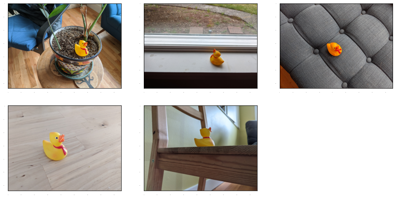
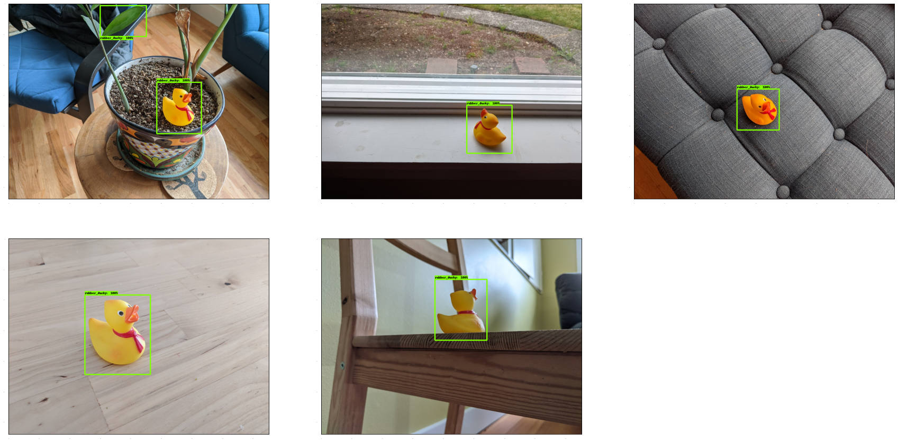

<!DOCTYPE html>

<html>
  <head>
    <meta charset="utf-8" />
    <meta name="viewport" content="width=device-width, initial-scale=1.0" /><meta name="generator" content="Docutils 0.17.1: http://docutils.sourceforge.net/" />

    <title>Few Shot Object Detection with RetinaNet &#8212; Training Computer Vision Models for Structured Prediction</title>
    
  <!-- Loaded before other Sphinx assets -->
  <link href="../_static/styles/theme.css?digest=1999514e3f237ded88cf" rel="stylesheet">
<link href="../_static/styles/pydata-sphinx-theme.css?digest=1999514e3f237ded88cf" rel="stylesheet">

    
  <link rel="stylesheet"
    href="../_static/vendor/fontawesome/5.13.0/css/all.min.css">
  <link rel="preload" as="font" type="font/woff2" crossorigin
    href="../_static/vendor/fontawesome/5.13.0/webfonts/fa-solid-900.woff2">
  <link rel="preload" as="font" type="font/woff2" crossorigin
    href="../_static/vendor/fontawesome/5.13.0/webfonts/fa-brands-400.woff2">

    <link rel="stylesheet" type="text/css" href="../_static/pygments.css" />
    <link rel="stylesheet" href="../_static/styles/sphinx-book-theme.css?digest=5115cc725059bd94278eecd172e13a965bf8f5a9" type="text/css" />
    <link rel="stylesheet" type="text/css" href="../_static/togglebutton.css" />
    <link rel="stylesheet" type="text/css" href="../_static/copybutton.css" />
    <link rel="stylesheet" type="text/css" href="../_static/mystnb.css" />
    <link rel="stylesheet" type="text/css" href="../_static/sphinx-thebe.css" />
    <link rel="stylesheet" type="text/css" href="../_static/custom.css" />
    <link rel="stylesheet" type="text/css" href="../_static/design-style.b7bb847fb20b106c3d81b95245e65545.min.css" />
    
  <!-- Pre-loaded scripts that we'll load fully later -->
  <link rel="preload" as="script" href="../_static/scripts/pydata-sphinx-theme.js?digest=1999514e3f237ded88cf">

    <script data-url_root="../" id="documentation_options" src="../_static/documentation_options.js"></script>
    <script src="../_static/jquery.js"></script>
    <script src="../_static/underscore.js"></script>
    <script src="../_static/doctools.js"></script>
    <script src="../_static/clipboard.min.js"></script>
    <script src="../_static/copybutton.js"></script>
    <script src="../_static/scripts/sphinx-book-theme.js?digest=9c920249402e914e316237a7dbc6769907cce411"></script>
    <script>let toggleHintShow = 'Click to show';</script>
    <script>let toggleHintHide = 'Click to hide';</script>
    <script>let toggleOpenOnPrint = 'true';</script>
    <script src="../_static/togglebutton.js"></script>
    <script>var togglebuttonSelector = '.toggle, .admonition.dropdown, .tag_hide_input div.cell_input, .tag_hide-input div.cell_input, .tag_hide_output div.cell_output, .tag_hide-output div.cell_output, .tag_hide_cell.cell, .tag_hide-cell.cell';</script>
    <script src="../_static/design-tabs.js"></script>
    <script>const THEBE_JS_URL = "https://unpkg.com/thebe@0.8.2/lib/index.js"
const thebe_selector = ".thebe,.cell"
const thebe_selector_input = "pre"
const thebe_selector_output = ".output, .cell_output"
</script>
    <script async="async" src="../_static/sphinx-thebe.js"></script>
    <link rel="index" title="Index" href="../genindex.html" />
    <link rel="search" title="Search" href="../search.html" />
    <meta name="viewport" content="width=device-width, initial-scale=1" />
    <meta name="docsearch:language" content="None">
    

    <!-- Google Analytics -->
    
  </head>
  <body data-spy="scroll" data-target="#bd-toc-nav" data-offset="60">
<!-- Checkboxes to toggle the left sidebar -->
<input type="checkbox" class="sidebar-toggle" name="__navigation" id="__navigation" aria-label="Toggle navigation sidebar">
<label class="overlay overlay-navbar" for="__navigation">
    <div class="visually-hidden">Toggle navigation sidebar</div>
</label>
<!-- Checkboxes to toggle the in-page toc -->
<input type="checkbox" class="sidebar-toggle" name="__page-toc" id="__page-toc" aria-label="Toggle in-page Table of Contents">
<label class="overlay overlay-pagetoc" for="__page-toc">
    <div class="visually-hidden">Toggle in-page Table of Contents</div>
</label>
<!-- Headers at the top -->
<div class="announcement header-item noprint"></div>
<div class="header header-item noprint"></div>

    
    <div class="container-fluid" id="banner"></div>

    

    <div class="container-xl">
      <div class="row">
          
<!-- Sidebar -->
<div class="bd-sidebar noprint" id="site-navigation">
    <div class="bd-sidebar__content">
        <div class="bd-sidebar__top"><div class="navbar-brand-box">
    <a class="navbar-brand text-wrap" href="../index.html">
      
      
      
      <h1 class="site-logo" id="site-title">Training Computer Vision Models for Structured Prediction</h1>
      
    </a>
</div><form class="bd-search d-flex align-items-center" action="../search.html" method="get">
  <i class="icon fas fa-search"></i>
  <input type="search" class="form-control" name="q" id="search-input" placeholder="Search this book..." aria-label="Search this book..." autocomplete="off" >
</form><nav class="bd-links" id="bd-docs-nav" aria-label="Main">
    <div class="bd-toc-item active">
        
        <ul class="nav bd-sidenav bd-sidenav__home-link">
            <li class="toctree-l1">
                <a class="reference internal" href="../intro.html">
                    Introduction
                </a>
            </li>
        </ul>
        <ul class="nav bd-sidenav">
 <li class="toctree-l1 has-children">
  <a class="reference internal" href="../doc_ai.html">
   Document AI: Understanding Photos of Documents
  </a>
  <input class="toctree-checkbox" id="toctree-checkbox-1" name="toctree-checkbox-1" type="checkbox"/>
  <label for="toctree-checkbox-1">
   <i class="fas fa-chevron-down">
   </i>
  </label>
  <ul>
   <li class="toctree-l2">
    <a class="reference internal" href="../doc_ai_notebooks/donut_rvl_cdip.html">
     Fine Tuning
     <code class="docutils literal notranslate">
      <span class="pre">
       DONUT
      </span>
     </code>
     on RVL-CDIP Dataset
    </a>
   </li>
   <li class="toctree-l2">
    <a class="reference internal" href="../doc_ai_notebooks/donut_cord.html">
     Fine Tune DONUT on the CORD Dataset
    </a>
   </li>
  </ul>
 </li>
</ul>

    </div>
</nav></div>
        <div class="bd-sidebar__bottom">
             <!-- To handle the deprecated key -->
            
            <div class="navbar_extra_footer">
            Created at <a href="https://kungfu.ai">KUNGFU.AI</a>
            </div>
            
        </div>
    </div>
    <div id="rtd-footer-container"></div>
</div>


          


          
<!-- A tiny helper pixel to detect if we've scrolled -->
<div class="sbt-scroll-pixel-helper"></div>
<!-- Main content -->
<div class="col py-0 content-container">
    
    <div class="header-article row sticky-top noprint">
        


<div class="col py-1 d-flex header-article-main">
    <div class="header-article__left">
        
        <label for="__navigation"
  class="headerbtn"
  data-toggle="tooltip"
data-placement="right"
title="Toggle navigation"
>
  

<span class="headerbtn__icon-container">
  <i class="fas fa-bars"></i>
  </span>

</label>

        
    </div>
    <div class="header-article__right">
<div class="menu-dropdown menu-dropdown-launch-buttons">
  <button class="headerbtn menu-dropdown__trigger"
      aria-label="Launch interactive content">
      <i class="fas fa-rocket"></i>
  </button>
  <div class="menu-dropdown__content">
    <ul>
      <li>
        <a href="https://colab.research.google.com/github/kungfuai/kungfuu-computer-vision/blob/main/course2-structured-prediction/fsod_notebooks/tf_retinanet_fsod.ipynb"
   class="headerbtn"
   data-toggle="tooltip"
data-placement="left"
title="Launch on Colab"
>
  

<span class="headerbtn__icon-container">
  
    
  </span>
<span class="headerbtn__text-container">Colab</span>
</a>

      </li>
      
    </ul>
  </div>
</div>

<button onclick="toggleFullScreen()"
  class="headerbtn"
  data-toggle="tooltip"
data-placement="bottom"
title="Fullscreen mode"
>
  

<span class="headerbtn__icon-container">
  <i class="fas fa-expand"></i>
  </span>

</button>

<div class="menu-dropdown menu-dropdown-repository-buttons">
  <button class="headerbtn menu-dropdown__trigger"
      aria-label="Source repositories">
      <i class="fab fa-github"></i>
  </button>
  <div class="menu-dropdown__content">
    <ul>
      <li>
        <a href="https://github.com/kungfuai/kungfuu-computer-vision"
   class="headerbtn"
   data-toggle="tooltip"
data-placement="left"
title="Source repository"
>
  

<span class="headerbtn__icon-container">
  <i class="fab fa-github"></i>
  </span>
<span class="headerbtn__text-container">repository</span>
</a>

      </li>
      
      <li>
        <a href="https://github.com/kungfuai/kungfuu-computer-vision/issues/new?title=Issue%20on%20page%20%2Ffsod_notebooks/tf_retinanet_fsod.html&body=Your%20issue%20content%20here."
   class="headerbtn"
   data-toggle="tooltip"
data-placement="left"
title="Open an issue"
>
  

<span class="headerbtn__icon-container">
  <i class="fas fa-lightbulb"></i>
  </span>
<span class="headerbtn__text-container">open issue</span>
</a>

      </li>
      
    </ul>
  </div>
</div>

<div class="menu-dropdown menu-dropdown-download-buttons">
  <button class="headerbtn menu-dropdown__trigger"
      aria-label="Download this page">
      <i class="fas fa-download"></i>
  </button>
  <div class="menu-dropdown__content">
    <ul>
      <li>
        <a href="../_sources/fsod_notebooks/tf_retinanet_fsod.ipynb"
   class="headerbtn"
   data-toggle="tooltip"
data-placement="left"
title="Download source file"
>
  

<span class="headerbtn__icon-container">
  <i class="fas fa-file"></i>
  </span>
<span class="headerbtn__text-container">.ipynb</span>
</a>

      </li>
      
      <li>
        
<button onclick="printPdf(this)"
  class="headerbtn"
  data-toggle="tooltip"
data-placement="left"
title="Print to PDF"
>
  

<span class="headerbtn__icon-container">
  <i class="fas fa-file-pdf"></i>
  </span>
<span class="headerbtn__text-container">.pdf</span>
</button>

      </li>
      
    </ul>
  </div>
</div>
<label for="__page-toc"
  class="headerbtn headerbtn-page-toc"
  
>
  

<span class="headerbtn__icon-container">
  <i class="fas fa-list"></i>
  </span>

</label>

    </div>
</div>

<!-- Table of contents -->
<div class="col-md-3 bd-toc show noprint">
    <div class="tocsection onthispage pt-5 pb-3">
        <i class="fas fa-list"></i> Contents
    </div>
    <nav id="bd-toc-nav" aria-label="Page">
        <ul class="visible nav section-nav flex-column">
 <li class="toc-h1 nav-item toc-entry">
  <a class="reference internal nav-link" href="#">
   Few Shot Object Detection with RetinaNet
  </a>
  <ul class="visible nav section-nav flex-column">
   <li class="toc-h2 nav-item toc-entry">
    <a class="reference internal nav-link" href="#imports">
     Imports
    </a>
   </li>
  </ul>
 </li>
 <li class="toc-h1 nav-item toc-entry">
  <a class="reference internal nav-link" href="#utilities">
   Utilities
  </a>
 </li>
 <li class="toc-h1 nav-item toc-entry">
  <a class="reference internal nav-link" href="#rubber-ducky-data">
   Rubber Ducky data
  </a>
 </li>
 <li class="toc-h1 nav-item toc-entry">
  <a class="reference internal nav-link" href="#annotate-images-with-bounding-boxes">
   Annotate images with bounding boxes
  </a>
 </li>
 <li class="toc-h1 nav-item toc-entry">
  <a class="reference internal nav-link" href="#in-case-you-didn-t-want-to-label">
   In case you didn’t want to label…
  </a>
 </li>
 <li class="toc-h1 nav-item toc-entry">
  <a class="reference internal nav-link" href="#prepare-data-for-training">
   Prepare data for training
  </a>
 </li>
 <li class="toc-h1 nav-item toc-entry">
  <a class="reference internal nav-link" href="#let-s-just-visualize-the-rubber-duckies-as-a-sanity-check">
   Let’s just visualize the rubber duckies as a sanity check
  </a>
 </li>
 <li class="toc-h1 nav-item toc-entry">
  <a class="reference internal nav-link" href="#create-model-and-restore-weights-for-all-but-last-layer">
   Create model and restore weights for all but last layer
  </a>
 </li>
 <li class="toc-h1 nav-item toc-entry">
  <a class="reference internal nav-link" href="#eager-mode-custom-training-loop">
   Eager mode custom training loop
  </a>
 </li>
 <li class="toc-h1 nav-item toc-entry">
  <a class="reference internal nav-link" href="#load-test-images-and-run-inference-with-new-model">
   Load test images and run inference with new model!
  </a>
 </li>
</ul>

    </nav>
</div>
    </div>
    <div class="article row">
        <div class="col pl-md-3 pl-lg-5 content-container">
            <!-- Table of contents that is only displayed when printing the page -->
            <div id="jb-print-docs-body" class="onlyprint">
                <h1>Few Shot Object Detection with RetinaNet</h1>
                <!-- Table of contents -->
                <div id="print-main-content">
                    <div id="jb-print-toc">
                        
                        <div>
                            <h2> Contents </h2>
                        </div>
                        <nav aria-label="Page">
                            <ul class="visible nav section-nav flex-column">
 <li class="toc-h1 nav-item toc-entry">
  <a class="reference internal nav-link" href="#">
   Few Shot Object Detection with RetinaNet
  </a>
  <ul class="visible nav section-nav flex-column">
   <li class="toc-h2 nav-item toc-entry">
    <a class="reference internal nav-link" href="#imports">
     Imports
    </a>
   </li>
  </ul>
 </li>
 <li class="toc-h1 nav-item toc-entry">
  <a class="reference internal nav-link" href="#utilities">
   Utilities
  </a>
 </li>
 <li class="toc-h1 nav-item toc-entry">
  <a class="reference internal nav-link" href="#rubber-ducky-data">
   Rubber Ducky data
  </a>
 </li>
 <li class="toc-h1 nav-item toc-entry">
  <a class="reference internal nav-link" href="#annotate-images-with-bounding-boxes">
   Annotate images with bounding boxes
  </a>
 </li>
 <li class="toc-h1 nav-item toc-entry">
  <a class="reference internal nav-link" href="#in-case-you-didn-t-want-to-label">
   In case you didn’t want to label…
  </a>
 </li>
 <li class="toc-h1 nav-item toc-entry">
  <a class="reference internal nav-link" href="#prepare-data-for-training">
   Prepare data for training
  </a>
 </li>
 <li class="toc-h1 nav-item toc-entry">
  <a class="reference internal nav-link" href="#let-s-just-visualize-the-rubber-duckies-as-a-sanity-check">
   Let’s just visualize the rubber duckies as a sanity check
  </a>
 </li>
 <li class="toc-h1 nav-item toc-entry">
  <a class="reference internal nav-link" href="#create-model-and-restore-weights-for-all-but-last-layer">
   Create model and restore weights for all but last layer
  </a>
 </li>
 <li class="toc-h1 nav-item toc-entry">
  <a class="reference internal nav-link" href="#eager-mode-custom-training-loop">
   Eager mode custom training loop
  </a>
 </li>
 <li class="toc-h1 nav-item toc-entry">
  <a class="reference internal nav-link" href="#load-test-images-and-run-inference-with-new-model">
   Load test images and run inference with new model!
  </a>
 </li>
</ul>

                        </nav>
                    </div>
                </div>
            </div>
            <main id="main-content" role="main">
                
              <div>
                
  <section class="tex2jax_ignore mathjax_ignore" id="few-shot-object-detection-with-retinanet">
<h1>Few Shot Object Detection with RetinaNet<a class="headerlink" href="#few-shot-object-detection-with-retinanet" title="Permalink to this headline">#</a></h1>
<p>This tutorial is adapted from the open source <a class="reference external" href="https://github.com/tensorflow/models/blob/master/research/object_detection/colab_tutorials/eager_few_shot_od_training_tf2_colab.ipynb">colab example</a>.</p>
<p>This notebook demonstrates fine tuning of a (TF2 friendly) RetinaNet architecture on very few examples of a novel class after initializing from a pre-trained COCO checkpoint.</p>
<p>Estimated time to run through this colab (with GPU): &lt; 5 minutes.</p>
<section id="imports">
<h2>Imports<a class="headerlink" href="#imports" title="Permalink to this headline">#</a></h2>
<div class="cell docutils container">
<div class="cell_input docutils container">
<div class="highlight-default notranslate"><div class="highlight"><pre><span></span>!pip install ipython-autotime
%load_ext autotime
</pre></div>
</div>
</div>
<div class="cell_output docutils container">
<div class="output stream highlight-myst-ansi notranslate"><div class="highlight"><pre><span></span>Collecting ipython-autotime
  Downloading ipython_autotime-0.3.1-py2.py3-none-any.whl (6.8 kB)
Requirement already satisfied: ipython in /usr/local/lib/python3.7/dist-packages (from ipython-autotime) (5.5.0)
Requirement already satisfied: pexpect in /usr/local/lib/python3.7/dist-packages (from ipython-&gt;ipython-autotime) (4.8.0)
Requirement already satisfied: decorator in /usr/local/lib/python3.7/dist-packages (from ipython-&gt;ipython-autotime) (4.4.2)
Requirement already satisfied: setuptools&gt;=18.5 in /usr/local/lib/python3.7/dist-packages (from ipython-&gt;ipython-autotime) (57.4.0)
Requirement already satisfied: simplegeneric&gt;0.8 in /usr/local/lib/python3.7/dist-packages (from ipython-&gt;ipython-autotime) (0.8.1)
Requirement already satisfied: pygments in /usr/local/lib/python3.7/dist-packages (from ipython-&gt;ipython-autotime) (2.6.1)
Requirement already satisfied: pickleshare in /usr/local/lib/python3.7/dist-packages (from ipython-&gt;ipython-autotime) (0.7.5)
Requirement already satisfied: prompt-toolkit&lt;2.0.0,&gt;=1.0.4 in /usr/local/lib/python3.7/dist-packages (from ipython-&gt;ipython-autotime) (1.0.18)
Requirement already satisfied: traitlets&gt;=4.2 in /usr/local/lib/python3.7/dist-packages (from ipython-&gt;ipython-autotime) (5.1.1)
Requirement already satisfied: wcwidth in /usr/local/lib/python3.7/dist-packages (from prompt-toolkit&lt;2.0.0,&gt;=1.0.4-&gt;ipython-&gt;ipython-autotime) (0.2.5)
Requirement already satisfied: six&gt;=1.9.0 in /usr/local/lib/python3.7/dist-packages (from prompt-toolkit&lt;2.0.0,&gt;=1.0.4-&gt;ipython-&gt;ipython-autotime) (1.15.0)
Requirement already satisfied: ptyprocess&gt;=0.5 in /usr/local/lib/python3.7/dist-packages (from pexpect-&gt;ipython-&gt;ipython-autotime) (0.7.0)
Installing collected packages: ipython-autotime
Successfully installed ipython-autotime-0.3.1
time: 2.02 ms (started: 2021-12-09 03:00:17 +00:00)
</pre></div>
</div>
</div>
</div>
<div class="cell docutils container">
<div class="cell_input docutils container">
<div class="highlight-default notranslate"><div class="highlight"><pre><span></span><span class="c1"># !pip install -U --pre tensorflow==&quot;2.2.0&quot;</span>
</pre></div>
</div>
</div>
<div class="cell_output docutils container">
<div class="output stream highlight-myst-ansi notranslate"><div class="highlight"><pre><span></span>time: 1.24 ms (started: 2021-12-09 03:00:17 +00:00)
</pre></div>
</div>
</div>
</div>
<div class="cell docutils container">
<div class="cell_input docutils container">
<div class="highlight-default notranslate"><div class="highlight"><pre><span></span>import os
import pathlib

# Clone the tensorflow models repository if it doesn&#39;t already exist
if &quot;models&quot; in pathlib.Path.cwd().parts:
  while &quot;models&quot; in pathlib.Path.cwd().parts:
    os.chdir(&#39;..&#39;)
elif not pathlib.Path(&#39;models&#39;).exists():
  !git clone --depth 1 https://github.com/tensorflow/models
</pre></div>
</div>
</div>
<div class="cell_output docutils container">
<div class="output stream highlight-myst-ansi notranslate"><div class="highlight"><pre><span></span>Cloning into &#39;models&#39;...
remote: Enumerating objects: 3206, done.
remote: Counting objects: 100% (3206/3206), done.
remote: Compressing objects: 100% (2708/2708), done.
remote: Total 3206 (delta 857), reused 1371 (delta 454), pack-reused 0
Receiving objects: 100% (3206/3206), 33.40 MiB | 19.32 MiB/s, done.
Resolving deltas: 100% (857/857), done.
time: 4.46 s (started: 2021-12-09 03:00:17 +00:00)
</pre></div>
</div>
</div>
</div>
<div class="cell docutils container">
<div class="cell_input docutils container">
<div class="highlight-default notranslate"><div class="highlight"><pre><span></span><span class="c1"># Install the Object Detection API</span>
<span class="o">%%</span><span class="n">bash</span>
<span class="n">cd</span> <span class="n">models</span><span class="o">/</span><span class="n">research</span><span class="o">/</span>
<span class="n">protoc</span> <span class="n">object_detection</span><span class="o">/</span><span class="n">protos</span><span class="o">/*.</span><span class="n">proto</span> <span class="o">--</span><span class="n">python_out</span><span class="o">=.</span>
<span class="n">cp</span> <span class="n">object_detection</span><span class="o">/</span><span class="n">packages</span><span class="o">/</span><span class="n">tf2</span><span class="o">/</span><span class="n">setup</span><span class="o">.</span><span class="n">py</span> <span class="o">.</span>
<span class="n">python</span> <span class="o">-</span><span class="n">m</span> <span class="n">pip</span> <span class="n">install</span> <span class="o">.</span>
</pre></div>
</div>
</div>
<div class="cell_output docutils container">
<div class="output stream highlight-myst-ansi notranslate"><div class="highlight"><pre><span></span>Processing /content/models/research
Collecting avro-python3
  Downloading avro-python3-1.10.2.tar.gz (38 kB)
Collecting apache-beam
  Downloading apache_beam-2.34.0-cp37-cp37m-manylinux2010_x86_64.whl (9.8 MB)
Requirement already satisfied: pillow in /usr/local/lib/python3.7/dist-packages (from object-detection==0.1) (7.1.2)
Requirement already satisfied: lxml in /usr/local/lib/python3.7/dist-packages (from object-detection==0.1) (4.2.6)
Requirement already satisfied: matplotlib in /usr/local/lib/python3.7/dist-packages (from object-detection==0.1) (3.2.2)
Requirement already satisfied: Cython in /usr/local/lib/python3.7/dist-packages (from object-detection==0.1) (0.29.24)
Requirement already satisfied: contextlib2 in /usr/local/lib/python3.7/dist-packages (from object-detection==0.1) (0.5.5)
Collecting tf-slim
  Downloading tf_slim-1.1.0-py2.py3-none-any.whl (352 kB)
Requirement already satisfied: six in /usr/local/lib/python3.7/dist-packages (from object-detection==0.1) (1.15.0)
Requirement already satisfied: pycocotools in /usr/local/lib/python3.7/dist-packages (from object-detection==0.1) (2.0.3)
Collecting lvis
  Downloading lvis-0.5.3-py3-none-any.whl (14 kB)
Requirement already satisfied: scipy in /usr/local/lib/python3.7/dist-packages (from object-detection==0.1) (1.4.1)
Requirement already satisfied: pandas in /usr/local/lib/python3.7/dist-packages (from object-detection==0.1) (1.1.5)
Collecting tf-models-official&gt;=2.5.1
  Downloading tf_models_official-2.7.0-py2.py3-none-any.whl (1.8 MB)
Collecting tensorflow_io
  Downloading tensorflow_io-0.22.0-cp37-cp37m-manylinux_2_12_x86_64.manylinux2010_x86_64.whl (22.7 MB)
Requirement already satisfied: keras in /usr/local/lib/python3.7/dist-packages (from object-detection==0.1) (2.7.0)
Requirement already satisfied: psutil&gt;=5.4.3 in /usr/local/lib/python3.7/dist-packages (from tf-models-official&gt;=2.5.1-&gt;object-detection==0.1) (5.4.8)
Requirement already satisfied: tensorflow-hub&gt;=0.6.0 in /usr/local/lib/python3.7/dist-packages (from tf-models-official&gt;=2.5.1-&gt;object-detection==0.1) (0.12.0)
Collecting py-cpuinfo&gt;=3.3.0
  Downloading py-cpuinfo-8.0.0.tar.gz (99 kB)
Requirement already satisfied: tensorflow&gt;=2.7.0 in /usr/local/lib/python3.7/dist-packages (from tf-models-official&gt;=2.5.1-&gt;object-detection==0.1) (2.7.0)
Collecting sacrebleu
  Downloading sacrebleu-2.0.0-py3-none-any.whl (90 kB)
Requirement already satisfied: numpy&gt;=1.15.4 in /usr/local/lib/python3.7/dist-packages (from tf-models-official&gt;=2.5.1-&gt;object-detection==0.1) (1.19.5)
Requirement already satisfied: tensorflow-datasets in /usr/local/lib/python3.7/dist-packages (from tf-models-official&gt;=2.5.1-&gt;object-detection==0.1) (4.0.1)
Collecting seqeval
  Downloading seqeval-1.2.2.tar.gz (43 kB)
Collecting tensorflow-addons
  Downloading tensorflow_addons-0.15.0-cp37-cp37m-manylinux_2_12_x86_64.manylinux2010_x86_64.whl (1.1 MB)
Collecting pyyaml&gt;=5.1
  Downloading PyYAML-6.0-cp37-cp37m-manylinux_2_5_x86_64.manylinux1_x86_64.manylinux_2_12_x86_64.manylinux2010_x86_64.whl (596 kB)
Requirement already satisfied: oauth2client in /usr/local/lib/python3.7/dist-packages (from tf-models-official&gt;=2.5.1-&gt;object-detection==0.1) (4.1.3)
Requirement already satisfied: gin-config in /usr/local/lib/python3.7/dist-packages (from tf-models-official&gt;=2.5.1-&gt;object-detection==0.1) (0.5.0)
Collecting tensorflow-text&gt;=2.7.0
  Downloading tensorflow_text-2.7.3-cp37-cp37m-manylinux2010_x86_64.whl (4.9 MB)
Collecting opencv-python-headless
  Downloading opencv_python_headless-4.5.4.60-cp37-cp37m-manylinux_2_17_x86_64.manylinux2014_x86_64.whl (47.6 MB)
Requirement already satisfied: google-api-python-client&gt;=1.6.7 in /usr/local/lib/python3.7/dist-packages (from tf-models-official&gt;=2.5.1-&gt;object-detection==0.1) (1.12.8)
Requirement already satisfied: kaggle&gt;=1.3.9 in /usr/local/lib/python3.7/dist-packages (from tf-models-official&gt;=2.5.1-&gt;object-detection==0.1) (1.5.12)
Collecting sentencepiece
  Downloading sentencepiece-0.1.96-cp37-cp37m-manylinux_2_17_x86_64.manylinux2014_x86_64.whl (1.2 MB)
Collecting tensorflow-model-optimization&gt;=0.4.1
  Downloading tensorflow_model_optimization-0.7.0-py2.py3-none-any.whl (213 kB)
Requirement already satisfied: httplib2&lt;1dev,&gt;=0.15.0 in /usr/local/lib/python3.7/dist-packages (from google-api-python-client&gt;=1.6.7-&gt;tf-models-official&gt;=2.5.1-&gt;object-detection==0.1) (0.17.4)
Requirement already satisfied: google-auth-httplib2&gt;=0.0.3 in /usr/local/lib/python3.7/dist-packages (from google-api-python-client&gt;=1.6.7-&gt;tf-models-official&gt;=2.5.1-&gt;object-detection==0.1) (0.0.4)
Requirement already satisfied: google-api-core&lt;2dev,&gt;=1.21.0 in /usr/local/lib/python3.7/dist-packages (from google-api-python-client&gt;=1.6.7-&gt;tf-models-official&gt;=2.5.1-&gt;object-detection==0.1) (1.26.3)
Requirement already satisfied: uritemplate&lt;4dev,&gt;=3.0.0 in /usr/local/lib/python3.7/dist-packages (from google-api-python-client&gt;=1.6.7-&gt;tf-models-official&gt;=2.5.1-&gt;object-detection==0.1) (3.0.1)
Requirement already satisfied: google-auth&gt;=1.16.0 in /usr/local/lib/python3.7/dist-packages (from google-api-python-client&gt;=1.6.7-&gt;tf-models-official&gt;=2.5.1-&gt;object-detection==0.1) (1.35.0)
Requirement already satisfied: requests&lt;3.0.0dev,&gt;=2.18.0 in /usr/local/lib/python3.7/dist-packages (from google-api-core&lt;2dev,&gt;=1.21.0-&gt;google-api-python-client&gt;=1.6.7-&gt;tf-models-official&gt;=2.5.1-&gt;object-detection==0.1) (2.23.0)
Requirement already satisfied: pytz in /usr/local/lib/python3.7/dist-packages (from google-api-core&lt;2dev,&gt;=1.21.0-&gt;google-api-python-client&gt;=1.6.7-&gt;tf-models-official&gt;=2.5.1-&gt;object-detection==0.1) (2018.9)
Requirement already satisfied: protobuf&gt;=3.12.0 in /usr/local/lib/python3.7/dist-packages (from google-api-core&lt;2dev,&gt;=1.21.0-&gt;google-api-python-client&gt;=1.6.7-&gt;tf-models-official&gt;=2.5.1-&gt;object-detection==0.1) (3.17.3)
Requirement already satisfied: setuptools&gt;=40.3.0 in /usr/local/lib/python3.7/dist-packages (from google-api-core&lt;2dev,&gt;=1.21.0-&gt;google-api-python-client&gt;=1.6.7-&gt;tf-models-official&gt;=2.5.1-&gt;object-detection==0.1) (57.4.0)
Requirement already satisfied: packaging&gt;=14.3 in /usr/local/lib/python3.7/dist-packages (from google-api-core&lt;2dev,&gt;=1.21.0-&gt;google-api-python-client&gt;=1.6.7-&gt;tf-models-official&gt;=2.5.1-&gt;object-detection==0.1) (21.3)
Requirement already satisfied: googleapis-common-protos&lt;2.0dev,&gt;=1.6.0 in /usr/local/lib/python3.7/dist-packages (from google-api-core&lt;2dev,&gt;=1.21.0-&gt;google-api-python-client&gt;=1.6.7-&gt;tf-models-official&gt;=2.5.1-&gt;object-detection==0.1) (1.53.0)
Requirement already satisfied: pyasn1-modules&gt;=0.2.1 in /usr/local/lib/python3.7/dist-packages (from google-auth&gt;=1.16.0-&gt;google-api-python-client&gt;=1.6.7-&gt;tf-models-official&gt;=2.5.1-&gt;object-detection==0.1) (0.2.8)
Requirement already satisfied: rsa&lt;5,&gt;=3.1.4 in /usr/local/lib/python3.7/dist-packages (from google-auth&gt;=1.16.0-&gt;google-api-python-client&gt;=1.6.7-&gt;tf-models-official&gt;=2.5.1-&gt;object-detection==0.1) (4.8)
Requirement already satisfied: cachetools&lt;5.0,&gt;=2.0.0 in /usr/local/lib/python3.7/dist-packages (from google-auth&gt;=1.16.0-&gt;google-api-python-client&gt;=1.6.7-&gt;tf-models-official&gt;=2.5.1-&gt;object-detection==0.1) (4.2.4)
Requirement already satisfied: python-dateutil in /usr/local/lib/python3.7/dist-packages (from kaggle&gt;=1.3.9-&gt;tf-models-official&gt;=2.5.1-&gt;object-detection==0.1) (2.8.2)
Requirement already satisfied: tqdm in /usr/local/lib/python3.7/dist-packages (from kaggle&gt;=1.3.9-&gt;tf-models-official&gt;=2.5.1-&gt;object-detection==0.1) (4.62.3)
Requirement already satisfied: certifi in /usr/local/lib/python3.7/dist-packages (from kaggle&gt;=1.3.9-&gt;tf-models-official&gt;=2.5.1-&gt;object-detection==0.1) (2021.10.8)
Requirement already satisfied: python-slugify in /usr/local/lib/python3.7/dist-packages (from kaggle&gt;=1.3.9-&gt;tf-models-official&gt;=2.5.1-&gt;object-detection==0.1) (5.0.2)
Requirement already satisfied: urllib3 in /usr/local/lib/python3.7/dist-packages (from kaggle&gt;=1.3.9-&gt;tf-models-official&gt;=2.5.1-&gt;object-detection==0.1) (1.24.3)
Requirement already satisfied: pyparsing!=3.0.5,&gt;=2.0.2 in /usr/local/lib/python3.7/dist-packages (from packaging&gt;=14.3-&gt;google-api-core&lt;2dev,&gt;=1.21.0-&gt;google-api-python-client&gt;=1.6.7-&gt;tf-models-official&gt;=2.5.1-&gt;object-detection==0.1) (3.0.6)
Requirement already satisfied: pyasn1&lt;0.5.0,&gt;=0.4.6 in /usr/local/lib/python3.7/dist-packages (from pyasn1-modules&gt;=0.2.1-&gt;google-auth&gt;=1.16.0-&gt;google-api-python-client&gt;=1.6.7-&gt;tf-models-official&gt;=2.5.1-&gt;object-detection==0.1) (0.4.8)
Requirement already satisfied: idna&lt;3,&gt;=2.5 in /usr/local/lib/python3.7/dist-packages (from requests&lt;3.0.0dev,&gt;=2.18.0-&gt;google-api-core&lt;2dev,&gt;=1.21.0-&gt;google-api-python-client&gt;=1.6.7-&gt;tf-models-official&gt;=2.5.1-&gt;object-detection==0.1) (2.10)
Requirement already satisfied: chardet&lt;4,&gt;=3.0.2 in /usr/local/lib/python3.7/dist-packages (from requests&lt;3.0.0dev,&gt;=2.18.0-&gt;google-api-core&lt;2dev,&gt;=1.21.0-&gt;google-api-python-client&gt;=1.6.7-&gt;tf-models-official&gt;=2.5.1-&gt;object-detection==0.1) (3.0.4)
Requirement already satisfied: wheel&lt;1.0,&gt;=0.32.0 in /usr/local/lib/python3.7/dist-packages (from tensorflow&gt;=2.7.0-&gt;tf-models-official&gt;=2.5.1-&gt;object-detection==0.1) (0.37.0)
Requirement already satisfied: typing-extensions&gt;=3.6.6 in /usr/local/lib/python3.7/dist-packages (from tensorflow&gt;=2.7.0-&gt;tf-models-official&gt;=2.5.1-&gt;object-detection==0.1) (3.10.0.2)
Requirement already satisfied: grpcio&lt;2.0,&gt;=1.24.3 in /usr/local/lib/python3.7/dist-packages (from tensorflow&gt;=2.7.0-&gt;tf-models-official&gt;=2.5.1-&gt;object-detection==0.1) (1.42.0)
Requirement already satisfied: gast&lt;0.5.0,&gt;=0.2.1 in /usr/local/lib/python3.7/dist-packages (from tensorflow&gt;=2.7.0-&gt;tf-models-official&gt;=2.5.1-&gt;object-detection==0.1) (0.4.0)
Requirement already satisfied: tensorflow-estimator&lt;2.8,~=2.7.0rc0 in /usr/local/lib/python3.7/dist-packages (from tensorflow&gt;=2.7.0-&gt;tf-models-official&gt;=2.5.1-&gt;object-detection==0.1) (2.7.0)
Requirement already satisfied: tensorboard~=2.6 in /usr/local/lib/python3.7/dist-packages (from tensorflow&gt;=2.7.0-&gt;tf-models-official&gt;=2.5.1-&gt;object-detection==0.1) (2.7.0)
Requirement already satisfied: wrapt&gt;=1.11.0 in /usr/local/lib/python3.7/dist-packages (from tensorflow&gt;=2.7.0-&gt;tf-models-official&gt;=2.5.1-&gt;object-detection==0.1) (1.13.3)
Requirement already satisfied: opt-einsum&gt;=2.3.2 in /usr/local/lib/python3.7/dist-packages (from tensorflow&gt;=2.7.0-&gt;tf-models-official&gt;=2.5.1-&gt;object-detection==0.1) (3.3.0)
Requirement already satisfied: tensorflow-io-gcs-filesystem&gt;=0.21.0 in /usr/local/lib/python3.7/dist-packages (from tensorflow&gt;=2.7.0-&gt;tf-models-official&gt;=2.5.1-&gt;object-detection==0.1) (0.22.0)
Requirement already satisfied: h5py&gt;=2.9.0 in /usr/local/lib/python3.7/dist-packages (from tensorflow&gt;=2.7.0-&gt;tf-models-official&gt;=2.5.1-&gt;object-detection==0.1) (3.1.0)
Requirement already satisfied: libclang&gt;=9.0.1 in /usr/local/lib/python3.7/dist-packages (from tensorflow&gt;=2.7.0-&gt;tf-models-official&gt;=2.5.1-&gt;object-detection==0.1) (12.0.0)
Requirement already satisfied: google-pasta&gt;=0.1.1 in /usr/local/lib/python3.7/dist-packages (from tensorflow&gt;=2.7.0-&gt;tf-models-official&gt;=2.5.1-&gt;object-detection==0.1) (0.2.0)
Requirement already satisfied: termcolor&gt;=1.1.0 in /usr/local/lib/python3.7/dist-packages (from tensorflow&gt;=2.7.0-&gt;tf-models-official&gt;=2.5.1-&gt;object-detection==0.1) (1.1.0)
Requirement already satisfied: absl-py&gt;=0.4.0 in /usr/local/lib/python3.7/dist-packages (from tensorflow&gt;=2.7.0-&gt;tf-models-official&gt;=2.5.1-&gt;object-detection==0.1) (0.12.0)
Requirement already satisfied: keras-preprocessing&gt;=1.1.1 in /usr/local/lib/python3.7/dist-packages (from tensorflow&gt;=2.7.0-&gt;tf-models-official&gt;=2.5.1-&gt;object-detection==0.1) (1.1.2)
Requirement already satisfied: flatbuffers&lt;3.0,&gt;=1.12 in /usr/local/lib/python3.7/dist-packages (from tensorflow&gt;=2.7.0-&gt;tf-models-official&gt;=2.5.1-&gt;object-detection==0.1) (2.0)
Requirement already satisfied: astunparse&gt;=1.6.0 in /usr/local/lib/python3.7/dist-packages (from tensorflow&gt;=2.7.0-&gt;tf-models-official&gt;=2.5.1-&gt;object-detection==0.1) (1.6.3)
Requirement already satisfied: cached-property in /usr/local/lib/python3.7/dist-packages (from h5py&gt;=2.9.0-&gt;tensorflow&gt;=2.7.0-&gt;tf-models-official&gt;=2.5.1-&gt;object-detection==0.1) (1.5.2)
Requirement already satisfied: werkzeug&gt;=0.11.15 in /usr/local/lib/python3.7/dist-packages (from tensorboard~=2.6-&gt;tensorflow&gt;=2.7.0-&gt;tf-models-official&gt;=2.5.1-&gt;object-detection==0.1) (1.0.1)
Requirement already satisfied: google-auth-oauthlib&lt;0.5,&gt;=0.4.1 in /usr/local/lib/python3.7/dist-packages (from tensorboard~=2.6-&gt;tensorflow&gt;=2.7.0-&gt;tf-models-official&gt;=2.5.1-&gt;object-detection==0.1) (0.4.6)
Requirement already satisfied: tensorboard-plugin-wit&gt;=1.6.0 in /usr/local/lib/python3.7/dist-packages (from tensorboard~=2.6-&gt;tensorflow&gt;=2.7.0-&gt;tf-models-official&gt;=2.5.1-&gt;object-detection==0.1) (1.8.0)
Requirement already satisfied: markdown&gt;=2.6.8 in /usr/local/lib/python3.7/dist-packages (from tensorboard~=2.6-&gt;tensorflow&gt;=2.7.0-&gt;tf-models-official&gt;=2.5.1-&gt;object-detection==0.1) (3.3.6)
Requirement already satisfied: tensorboard-data-server&lt;0.7.0,&gt;=0.6.0 in /usr/local/lib/python3.7/dist-packages (from tensorboard~=2.6-&gt;tensorflow&gt;=2.7.0-&gt;tf-models-official&gt;=2.5.1-&gt;object-detection==0.1) (0.6.1)
Requirement already satisfied: requests-oauthlib&gt;=0.7.0 in /usr/local/lib/python3.7/dist-packages (from google-auth-oauthlib&lt;0.5,&gt;=0.4.1-&gt;tensorboard~=2.6-&gt;tensorflow&gt;=2.7.0-&gt;tf-models-official&gt;=2.5.1-&gt;object-detection==0.1) (1.3.0)
Requirement already satisfied: importlib-metadata&gt;=4.4 in /usr/local/lib/python3.7/dist-packages (from markdown&gt;=2.6.8-&gt;tensorboard~=2.6-&gt;tensorflow&gt;=2.7.0-&gt;tf-models-official&gt;=2.5.1-&gt;object-detection==0.1) (4.8.2)
Requirement already satisfied: zipp&gt;=0.5 in /usr/local/lib/python3.7/dist-packages (from importlib-metadata&gt;=4.4-&gt;markdown&gt;=2.6.8-&gt;tensorboard~=2.6-&gt;tensorflow&gt;=2.7.0-&gt;tf-models-official&gt;=2.5.1-&gt;object-detection==0.1) (3.6.0)
Requirement already satisfied: oauthlib&gt;=3.0.0 in /usr/local/lib/python3.7/dist-packages (from requests-oauthlib&gt;=0.7.0-&gt;google-auth-oauthlib&lt;0.5,&gt;=0.4.1-&gt;tensorboard~=2.6-&gt;tensorflow&gt;=2.7.0-&gt;tf-models-official&gt;=2.5.1-&gt;object-detection==0.1) (3.1.1)
Requirement already satisfied: dm-tree~=0.1.1 in /usr/local/lib/python3.7/dist-packages (from tensorflow-model-optimization&gt;=0.4.1-&gt;tf-models-official&gt;=2.5.1-&gt;object-detection==0.1) (0.1.6)
Collecting requests&lt;3.0.0dev,&gt;=2.18.0
  Downloading requests-2.26.0-py2.py3-none-any.whl (62 kB)
Requirement already satisfied: pydot&lt;2,&gt;=1.2.0 in /usr/local/lib/python3.7/dist-packages (from apache-beam-&gt;object-detection==0.1) (1.3.0)
Collecting hdfs&lt;3.0.0,&gt;=2.1.0
  Downloading hdfs-2.6.0-py3-none-any.whl (33 kB)
Requirement already satisfied: pyarrow&lt;6.0.0,&gt;=0.15.1 in /usr/local/lib/python3.7/dist-packages (from apache-beam-&gt;object-detection==0.1) (3.0.0)
Collecting avro-python3
  Downloading avro-python3-1.9.2.1.tar.gz (37 kB)
Requirement already satisfied: pymongo&lt;4.0.0,&gt;=3.8.0 in /usr/local/lib/python3.7/dist-packages (from apache-beam-&gt;object-detection==0.1) (3.12.1)
Collecting orjson&lt;4.0
  Downloading orjson-3.6.5-cp37-cp37m-manylinux_2_24_x86_64.whl (247 kB)
Collecting future&lt;1.0.0,&gt;=0.18.2
  Downloading future-0.18.2.tar.gz (829 kB)
Collecting dill&lt;0.3.2,&gt;=0.3.1.1
  Downloading dill-0.3.1.1.tar.gz (151 kB)
Requirement already satisfied: crcmod&lt;2.0,&gt;=1.7 in /usr/local/lib/python3.7/dist-packages (from apache-beam-&gt;object-detection==0.1) (1.7)
Collecting fastavro&lt;2,&gt;=0.21.4
  Downloading fastavro-1.4.7-cp37-cp37m-manylinux_2_17_x86_64.manylinux2014_x86_64.whl (2.3 MB)
Requirement already satisfied: docopt in /usr/local/lib/python3.7/dist-packages (from hdfs&lt;3.0.0,&gt;=2.1.0-&gt;apache-beam-&gt;object-detection==0.1) (0.6.2)
Requirement already satisfied: charset-normalizer~=2.0.0 in /usr/local/lib/python3.7/dist-packages (from requests&lt;3.0.0dev,&gt;=2.18.0-&gt;google-api-core&lt;2dev,&gt;=1.21.0-&gt;google-api-python-client&gt;=1.6.7-&gt;tf-models-official&gt;=2.5.1-&gt;object-detection==0.1) (2.0.8)
Requirement already satisfied: cycler&gt;=0.10.0 in /usr/local/lib/python3.7/dist-packages (from lvis-&gt;object-detection==0.1) (0.11.0)
Requirement already satisfied: opencv-python&gt;=4.1.0.25 in /usr/local/lib/python3.7/dist-packages (from lvis-&gt;object-detection==0.1) (4.1.2.30)
Requirement already satisfied: kiwisolver&gt;=1.1.0 in /usr/local/lib/python3.7/dist-packages (from lvis-&gt;object-detection==0.1) (1.3.2)
Requirement already satisfied: text-unidecode&gt;=1.3 in /usr/local/lib/python3.7/dist-packages (from python-slugify-&gt;kaggle&gt;=1.3.9-&gt;tf-models-official&gt;=2.5.1-&gt;object-detection==0.1) (1.3)
Requirement already satisfied: tabulate&gt;=0.8.9 in /usr/local/lib/python3.7/dist-packages (from sacrebleu-&gt;tf-models-official&gt;=2.5.1-&gt;object-detection==0.1) (0.8.9)
Collecting portalocker
  Downloading portalocker-2.3.2-py2.py3-none-any.whl (15 kB)
Collecting colorama
  Downloading colorama-0.4.4-py2.py3-none-any.whl (16 kB)
Requirement already satisfied: regex in /usr/local/lib/python3.7/dist-packages (from sacrebleu-&gt;tf-models-official&gt;=2.5.1-&gt;object-detection==0.1) (2019.12.20)
Requirement already satisfied: scikit-learn&gt;=0.21.3 in /usr/local/lib/python3.7/dist-packages (from seqeval-&gt;tf-models-official&gt;=2.5.1-&gt;object-detection==0.1) (1.0.1)
Requirement already satisfied: joblib&gt;=0.11 in /usr/local/lib/python3.7/dist-packages (from scikit-learn&gt;=0.21.3-&gt;seqeval-&gt;tf-models-official&gt;=2.5.1-&gt;object-detection==0.1) (1.1.0)
Requirement already satisfied: threadpoolctl&gt;=2.0.0 in /usr/local/lib/python3.7/dist-packages (from scikit-learn&gt;=0.21.3-&gt;seqeval-&gt;tf-models-official&gt;=2.5.1-&gt;object-detection==0.1) (3.0.0)
Requirement already satisfied: typeguard&gt;=2.7 in /usr/local/lib/python3.7/dist-packages (from tensorflow-addons-&gt;tf-models-official&gt;=2.5.1-&gt;object-detection==0.1) (2.7.1)
Requirement already satisfied: attrs&gt;=18.1.0 in /usr/local/lib/python3.7/dist-packages (from tensorflow-datasets-&gt;tf-models-official&gt;=2.5.1-&gt;object-detection==0.1) (21.2.0)
Requirement already satisfied: promise in /usr/local/lib/python3.7/dist-packages (from tensorflow-datasets-&gt;tf-models-official&gt;=2.5.1-&gt;object-detection==0.1) (2.3)
Requirement already satisfied: tensorflow-metadata in /usr/local/lib/python3.7/dist-packages (from tensorflow-datasets-&gt;tf-models-official&gt;=2.5.1-&gt;object-detection==0.1) (1.4.0)
Requirement already satisfied: importlib-resources in /usr/local/lib/python3.7/dist-packages (from tensorflow-datasets-&gt;tf-models-official&gt;=2.5.1-&gt;object-detection==0.1) (5.4.0)
Building wheels for collected packages: object-detection, py-cpuinfo, avro-python3, dill, future, seqeval
  Building wheel for object-detection (setup.py): started
  Building wheel for object-detection (setup.py): finished with status &#39;done&#39;
  Created wheel for object-detection: filename=object_detection-0.1-py3-none-any.whl size=1680866 sha256=edf4fe263e22dd04ec7a2a58dfd942da6f25c247aa5fdc7af5e6d471cd00431c
  Stored in directory: /tmp/pip-ephem-wheel-cache-6l1zpqx9/wheels/fa/a4/d2/e9a5057e414fd46c8e543d2706cd836d64e1fcd9eccceb2329
  Building wheel for py-cpuinfo (setup.py): started
  Building wheel for py-cpuinfo (setup.py): finished with status &#39;done&#39;
  Created wheel for py-cpuinfo: filename=py_cpuinfo-8.0.0-py3-none-any.whl size=22258 sha256=8de494dd07d7cd8e644e7c7d7a476f2477042b04b449af168e19c32d015a0913
  Stored in directory: /root/.cache/pip/wheels/d2/f1/1f/041add21dc9c4220157f1bd2bd6afe1f1a49524c3396b94401
  Building wheel for avro-python3 (setup.py): started
  Building wheel for avro-python3 (setup.py): finished with status &#39;done&#39;
  Created wheel for avro-python3: filename=avro_python3-1.9.2.1-py3-none-any.whl size=43512 sha256=677e3016717ea0a8220be3e0567caa88079f68ae4798ecfde3fd122b8bc4e0cd
  Stored in directory: /root/.cache/pip/wheels/bc/49/5f/fdb5b9d85055c478213e0158ac122b596816149a02d82e0ab1
  Building wheel for dill (setup.py): started
  Building wheel for dill (setup.py): finished with status &#39;done&#39;
  Created wheel for dill: filename=dill-0.3.1.1-py3-none-any.whl size=78546 sha256=04fc01432c9bd25a588e6ba9a67c384a1a7d3677b0b7b0b04cc2ddc44beecab4
  Stored in directory: /root/.cache/pip/wheels/a4/61/fd/c57e374e580aa78a45ed78d5859b3a44436af17e22ca53284f
  Building wheel for future (setup.py): started
  Building wheel for future (setup.py): finished with status &#39;done&#39;
  Created wheel for future: filename=future-0.18.2-py3-none-any.whl size=491070 sha256=c80982a9acb7522972eb40d3c03e895826aaa64ce41118bf5c7945253d464fbf
  Stored in directory: /root/.cache/pip/wheels/56/b0/fe/4410d17b32f1f0c3cf54cdfb2bc04d7b4b8f4ae377e2229ba0
  Building wheel for seqeval (setup.py): started
  Building wheel for seqeval (setup.py): finished with status &#39;done&#39;
  Created wheel for seqeval: filename=seqeval-1.2.2-py3-none-any.whl size=16181 sha256=250d43b323fbdae9d6fc4563a046de03de80b87e20f5aaf2015134267984d796
  Stored in directory: /root/.cache/pip/wheels/05/96/ee/7cac4e74f3b19e3158dce26a20a1c86b3533c43ec72a549fd7
Successfully built object-detection py-cpuinfo avro-python3 dill future seqeval
Installing collected packages: requests, portalocker, future, dill, colorama, tf-slim, tensorflow-text, tensorflow-model-optimization, tensorflow-addons, seqeval, sentencepiece, sacrebleu, pyyaml, py-cpuinfo, orjson, opencv-python-headless, hdfs, fastavro, avro-python3, tf-models-official, tensorflow-io, lvis, apache-beam, object-detection
  Attempting uninstall: requests
    Found existing installation: requests 2.23.0
    Uninstalling requests-2.23.0:
      Successfully uninstalled requests-2.23.0
  Attempting uninstall: future
    Found existing installation: future 0.16.0
    Uninstalling future-0.16.0:
      Successfully uninstalled future-0.16.0
  Attempting uninstall: dill
    Found existing installation: dill 0.3.4
    Uninstalling dill-0.3.4:
      Successfully uninstalled dill-0.3.4
  Attempting uninstall: pyyaml
    Found existing installation: PyYAML 3.13
    Uninstalling PyYAML-3.13:
      Successfully uninstalled PyYAML-3.13
Successfully installed apache-beam-2.34.0 avro-python3-1.9.2.1 colorama-0.4.4 dill-0.3.1.1 fastavro-1.4.7 future-0.18.2 hdfs-2.6.0 lvis-0.5.3 object-detection-0.1 opencv-python-headless-4.5.4.60 orjson-3.6.5 portalocker-2.3.2 py-cpuinfo-8.0.0 pyyaml-6.0 requests-2.26.0 sacrebleu-2.0.0 sentencepiece-0.1.96 seqeval-1.2.2 tensorflow-addons-0.15.0 tensorflow-io-0.22.0 tensorflow-model-optimization-0.7.0 tensorflow-text-2.7.3 tf-models-official-2.7.0 tf-slim-1.1.0
</pre></div>
</div>
<div class="output stderr highlight-myst-ansi notranslate"><div class="highlight"><pre><span></span>  DEPRECATION: A future pip version will change local packages to be built in-place without first copying to a temporary directory. We recommend you use --use-feature=in-tree-build to test your packages with this new behavior before it becomes the default.
   pip 21.3 will remove support for this functionality. You can find discussion regarding this at https://github.com/pypa/pip/issues/7555.
ERROR: pip&#39;s dependency resolver does not currently take into account all the packages that are installed. This behaviour is the source of the following dependency conflicts.
multiprocess 0.70.12.2 requires dill&gt;=0.3.4, but you have dill 0.3.1.1 which is incompatible.
google-colab 1.0.0 requires requests~=2.23.0, but you have requests 2.26.0 which is incompatible.
datascience 0.10.6 requires folium==0.2.1, but you have folium 0.8.3 which is incompatible.
</pre></div>
</div>
<div class="output stream highlight-myst-ansi notranslate"><div class="highlight"><pre><span></span>time: 35.9 s (started: 2021-12-09 03:00:21 +00:00)
</pre></div>
</div>
</div>
</div>
<div class="cell docutils container">
<div class="cell_input docutils container">
<div class="highlight-default notranslate"><div class="highlight"><pre><span></span><span class="kn">import</span> <span class="nn">matplotlib</span>
<span class="kn">import</span> <span class="nn">matplotlib.pyplot</span> <span class="k">as</span> <span class="nn">plt</span>

<span class="kn">import</span> <span class="nn">os</span>
<span class="kn">import</span> <span class="nn">random</span>
<span class="kn">import</span> <span class="nn">io</span>
<span class="kn">import</span> <span class="nn">imageio</span>
<span class="kn">import</span> <span class="nn">glob</span>
<span class="kn">import</span> <span class="nn">scipy.misc</span>
<span class="kn">import</span> <span class="nn">numpy</span> <span class="k">as</span> <span class="nn">np</span>
<span class="kn">from</span> <span class="nn">six</span> <span class="kn">import</span> <span class="n">BytesIO</span>
<span class="kn">from</span> <span class="nn">PIL</span> <span class="kn">import</span> <span class="n">Image</span><span class="p">,</span> <span class="n">ImageDraw</span><span class="p">,</span> <span class="n">ImageFont</span>
<span class="kn">from</span> <span class="nn">IPython.display</span> <span class="kn">import</span> <span class="n">display</span><span class="p">,</span> <span class="n">Javascript</span>
<span class="kn">from</span> <span class="nn">IPython.display</span> <span class="kn">import</span> <span class="n">Image</span> <span class="k">as</span> <span class="n">IPyImage</span>

<span class="kn">import</span> <span class="nn">tensorflow</span> <span class="k">as</span> <span class="nn">tf</span>

<span class="kn">from</span> <span class="nn">object_detection.utils</span> <span class="kn">import</span> <span class="n">label_map_util</span>
<span class="kn">from</span> <span class="nn">object_detection.utils</span> <span class="kn">import</span> <span class="n">config_util</span>
<span class="kn">from</span> <span class="nn">object_detection.utils</span> <span class="kn">import</span> <span class="n">visualization_utils</span> <span class="k">as</span> <span class="n">viz_utils</span>
<span class="kn">from</span> <span class="nn">object_detection.utils</span> <span class="kn">import</span> <span class="n">colab_utils</span>
<span class="kn">from</span> <span class="nn">object_detection.builders</span> <span class="kn">import</span> <span class="n">model_builder</span>

<span class="o">%</span><span class="n">matplotlib</span> <span class="n">inline</span>
</pre></div>
</div>
</div>
<div class="cell_output docutils container">
<div class="output stream highlight-myst-ansi notranslate"><div class="highlight"><pre><span></span>time: 3.19 s (started: 2021-12-09 03:00:57 +00:00)
</pre></div>
</div>
</div>
</div>
</section>
</section>
<section class="tex2jax_ignore mathjax_ignore" id="utilities">
<h1>Utilities<a class="headerlink" href="#utilities" title="Permalink to this headline">#</a></h1>
<div class="cell docutils container">
<div class="cell_input docutils container">
<div class="highlight-default notranslate"><div class="highlight"><pre><span></span><span class="k">def</span> <span class="nf">load_image_into_numpy_array</span><span class="p">(</span><span class="n">path</span><span class="p">):</span>
  <span class="sd">&quot;&quot;&quot;Load an image from file into a numpy array.</span>

<span class="sd">  Puts image into numpy array to feed into tensorflow graph.</span>
<span class="sd">  Note that by convention we put it into a numpy array with shape</span>
<span class="sd">  (height, width, channels), where channels=3 for RGB.</span>

<span class="sd">  Args:</span>
<span class="sd">    path: a file path.</span>

<span class="sd">  Returns:</span>
<span class="sd">    uint8 numpy array with shape (img_height, img_width, 3)</span>
<span class="sd">  &quot;&quot;&quot;</span>
  <span class="n">img_data</span> <span class="o">=</span> <span class="n">tf</span><span class="o">.</span><span class="n">io</span><span class="o">.</span><span class="n">gfile</span><span class="o">.</span><span class="n">GFile</span><span class="p">(</span><span class="n">path</span><span class="p">,</span> <span class="s1">&#39;rb&#39;</span><span class="p">)</span><span class="o">.</span><span class="n">read</span><span class="p">()</span>
  <span class="n">image</span> <span class="o">=</span> <span class="n">Image</span><span class="o">.</span><span class="n">open</span><span class="p">(</span><span class="n">BytesIO</span><span class="p">(</span><span class="n">img_data</span><span class="p">))</span>
  <span class="p">(</span><span class="n">im_width</span><span class="p">,</span> <span class="n">im_height</span><span class="p">)</span> <span class="o">=</span> <span class="n">image</span><span class="o">.</span><span class="n">size</span>
  <span class="k">return</span> <span class="n">np</span><span class="o">.</span><span class="n">array</span><span class="p">(</span><span class="n">image</span><span class="o">.</span><span class="n">getdata</span><span class="p">())</span><span class="o">.</span><span class="n">reshape</span><span class="p">(</span>
      <span class="p">(</span><span class="n">im_height</span><span class="p">,</span> <span class="n">im_width</span><span class="p">,</span> <span class="mi">3</span><span class="p">))</span><span class="o">.</span><span class="n">astype</span><span class="p">(</span><span class="n">np</span><span class="o">.</span><span class="n">uint8</span><span class="p">)</span>

<span class="k">def</span> <span class="nf">plot_detections</span><span class="p">(</span><span class="n">image_np</span><span class="p">,</span>
                    <span class="n">boxes</span><span class="p">,</span>
                    <span class="n">classes</span><span class="p">,</span>
                    <span class="n">scores</span><span class="p">,</span>
                    <span class="n">category_index</span><span class="p">,</span>
                    <span class="n">figsize</span><span class="o">=</span><span class="p">(</span><span class="mi">12</span><span class="p">,</span> <span class="mi">16</span><span class="p">),</span>
                    <span class="n">image_name</span><span class="o">=</span><span class="kc">None</span><span class="p">):</span>
  <span class="sd">&quot;&quot;&quot;Wrapper function to visualize detections.</span>

<span class="sd">  Args:</span>
<span class="sd">    image_np: uint8 numpy array with shape (img_height, img_width, 3)</span>
<span class="sd">    boxes: a numpy array of shape [N, 4]</span>
<span class="sd">    classes: a numpy array of shape [N]. Note that class indices are 1-based,</span>
<span class="sd">      and match the keys in the label map.</span>
<span class="sd">    scores: a numpy array of shape [N] or None.  If scores=None, then</span>
<span class="sd">      this function assumes that the boxes to be plotted are groundtruth</span>
<span class="sd">      boxes and plot all boxes as black with no classes or scores.</span>
<span class="sd">    category_index: a dict containing category dictionaries (each holding</span>
<span class="sd">      category index `id` and category name `name`) keyed by category indices.</span>
<span class="sd">    figsize: size for the figure.</span>
<span class="sd">    image_name: a name for the image file.</span>
<span class="sd">  &quot;&quot;&quot;</span>
  <span class="n">image_np_with_annotations</span> <span class="o">=</span> <span class="n">image_np</span><span class="o">.</span><span class="n">copy</span><span class="p">()</span>
  <span class="n">viz_utils</span><span class="o">.</span><span class="n">visualize_boxes_and_labels_on_image_array</span><span class="p">(</span>
      <span class="n">image_np_with_annotations</span><span class="p">,</span>
      <span class="n">boxes</span><span class="p">,</span>
      <span class="n">classes</span><span class="p">,</span>
      <span class="n">scores</span><span class="p">,</span>
      <span class="n">category_index</span><span class="p">,</span>
      <span class="n">use_normalized_coordinates</span><span class="o">=</span><span class="kc">True</span><span class="p">,</span>
      <span class="n">min_score_thresh</span><span class="o">=</span><span class="mf">0.8</span><span class="p">)</span>
  <span class="k">if</span> <span class="n">image_name</span><span class="p">:</span>
    <span class="n">plt</span><span class="o">.</span><span class="n">imsave</span><span class="p">(</span><span class="n">image_name</span><span class="p">,</span> <span class="n">image_np_with_annotations</span><span class="p">)</span>
  <span class="k">else</span><span class="p">:</span>
    <span class="n">plt</span><span class="o">.</span><span class="n">imshow</span><span class="p">(</span><span class="n">image_np_with_annotations</span><span class="p">)</span>
</pre></div>
</div>
</div>
<div class="cell_output docutils container">
<div class="output stream highlight-myst-ansi notranslate"><div class="highlight"><pre><span></span>time: 11.4 ms (started: 2021-12-09 03:01:00 +00:00)
</pre></div>
</div>
</div>
</div>
</section>
<section class="tex2jax_ignore mathjax_ignore" id="rubber-ducky-data">
<h1>Rubber Ducky data<a class="headerlink" href="#rubber-ducky-data" title="Permalink to this headline">#</a></h1>
<p>We will start with some toy (literally) data consisting of 5 images of a rubber
ducky.  Note that the <a class="reference external" href="https://cocodataset.org/#explore">coco</a> dataset contains a number of animals, but notably, it does <em>not</em> contain rubber duckies (or even ducks for that matter), so this is a novel class.</p>
<div class="cell docutils container">
<div class="cell_input docutils container">
<div class="highlight-default notranslate"><div class="highlight"><pre><span></span><span class="c1"># Load images and visualize</span>
<span class="n">train_image_dir</span> <span class="o">=</span> <span class="s1">&#39;models/research/object_detection/test_images/ducky/train/&#39;</span>
<span class="n">train_images_np</span> <span class="o">=</span> <span class="p">[]</span>
<span class="k">for</span> <span class="n">i</span> <span class="ow">in</span> <span class="nb">range</span><span class="p">(</span><span class="mi">1</span><span class="p">,</span> <span class="mi">6</span><span class="p">):</span>
  <span class="n">image_path</span> <span class="o">=</span> <span class="n">os</span><span class="o">.</span><span class="n">path</span><span class="o">.</span><span class="n">join</span><span class="p">(</span><span class="n">train_image_dir</span><span class="p">,</span> <span class="s1">&#39;robertducky&#39;</span> <span class="o">+</span> <span class="nb">str</span><span class="p">(</span><span class="n">i</span><span class="p">)</span> <span class="o">+</span> <span class="s1">&#39;.jpg&#39;</span><span class="p">)</span>
  <span class="n">train_images_np</span><span class="o">.</span><span class="n">append</span><span class="p">(</span><span class="n">load_image_into_numpy_array</span><span class="p">(</span><span class="n">image_path</span><span class="p">))</span>

<span class="n">plt</span><span class="o">.</span><span class="n">rcParams</span><span class="p">[</span><span class="s1">&#39;axes.grid&#39;</span><span class="p">]</span> <span class="o">=</span> <span class="kc">False</span>
<span class="n">plt</span><span class="o">.</span><span class="n">rcParams</span><span class="p">[</span><span class="s1">&#39;xtick.labelsize&#39;</span><span class="p">]</span> <span class="o">=</span> <span class="kc">False</span>
<span class="n">plt</span><span class="o">.</span><span class="n">rcParams</span><span class="p">[</span><span class="s1">&#39;ytick.labelsize&#39;</span><span class="p">]</span> <span class="o">=</span> <span class="kc">False</span>
<span class="n">plt</span><span class="o">.</span><span class="n">rcParams</span><span class="p">[</span><span class="s1">&#39;xtick.top&#39;</span><span class="p">]</span> <span class="o">=</span> <span class="kc">False</span>
<span class="n">plt</span><span class="o">.</span><span class="n">rcParams</span><span class="p">[</span><span class="s1">&#39;xtick.bottom&#39;</span><span class="p">]</span> <span class="o">=</span> <span class="kc">False</span>
<span class="n">plt</span><span class="o">.</span><span class="n">rcParams</span><span class="p">[</span><span class="s1">&#39;ytick.left&#39;</span><span class="p">]</span> <span class="o">=</span> <span class="kc">False</span>
<span class="n">plt</span><span class="o">.</span><span class="n">rcParams</span><span class="p">[</span><span class="s1">&#39;ytick.right&#39;</span><span class="p">]</span> <span class="o">=</span> <span class="kc">False</span>
<span class="n">plt</span><span class="o">.</span><span class="n">rcParams</span><span class="p">[</span><span class="s1">&#39;figure.figsize&#39;</span><span class="p">]</span> <span class="o">=</span> <span class="p">[</span><span class="mi">14</span><span class="p">,</span> <span class="mi">7</span><span class="p">]</span>

<span class="k">for</span> <span class="n">idx</span><span class="p">,</span> <span class="n">train_image_np</span> <span class="ow">in</span> <span class="nb">enumerate</span><span class="p">(</span><span class="n">train_images_np</span><span class="p">):</span>
  <span class="n">plt</span><span class="o">.</span><span class="n">subplot</span><span class="p">(</span><span class="mi">2</span><span class="p">,</span> <span class="mi">3</span><span class="p">,</span> <span class="n">idx</span><span class="o">+</span><span class="mi">1</span><span class="p">)</span>
  <span class="n">plt</span><span class="o">.</span><span class="n">imshow</span><span class="p">(</span><span class="n">train_image_np</span><span class="p">)</span>
<span class="n">plt</span><span class="o">.</span><span class="n">show</span><span class="p">()</span>
</pre></div>
</div>
</div>
<div class="cell_output docutils container">

<div class="output stream highlight-myst-ansi notranslate"><div class="highlight"><pre><span></span>time: 6.07 s (started: 2021-12-09 03:01:00 +00:00)
</pre></div>
</div>
</div>
</div>
</section>
<section class="tex2jax_ignore mathjax_ignore" id="annotate-images-with-bounding-boxes">
<h1>Annotate images with bounding boxes<a class="headerlink" href="#annotate-images-with-bounding-boxes" title="Permalink to this headline">#</a></h1>
<p>In this cell you will annotate the rubber duckies — draw a box around the rubber ducky in each image; click <code class="docutils literal notranslate"><span class="pre">next</span> <span class="pre">image</span></code> to go to the next image and <code class="docutils literal notranslate"><span class="pre">submit</span></code> when there are no more images.</p>
<p>If you’d like to skip the manual annotation step, we totally understand.  In this case, simply skip this cell and run the next cell instead, where we’ve prepopulated the groundtruth with pre-annotated bounding boxes.</p>
<div class="cell docutils container">
<div class="cell_input docutils container">
<div class="highlight-default notranslate"><div class="highlight"><pre><span></span><span class="n">gt_boxes</span> <span class="o">=</span> <span class="p">[]</span>
<span class="n">colab_utils</span><span class="o">.</span><span class="n">annotate</span><span class="p">(</span><span class="n">train_images_np</span><span class="p">,</span> <span class="n">box_storage_pointer</span><span class="o">=</span><span class="n">gt_boxes</span><span class="p">)</span>
</pre></div>
</div>
</div>
<div class="cell_output docutils container">
<script type="application/javascript">
              async function load_image(imgs, callbackId) {
                  //init organizational elements
                  const div = document.createElement('div');
                  var image_cont = document.createElement('div');
                  var errorlog = document.createElement('div');
                  var crosshair_h = document.createElement('div');
                  crosshair_h.style.position = "absolute";
                  crosshair_h.style.backgroundColor = "transparent";
                  crosshair_h.style.width = "100%";
                  crosshair_h.style.height = "0px";
                  crosshair_h.style.zIndex = 9998;
                  crosshair_h.style.borderStyle = "dotted";
                  crosshair_h.style.borderWidth = "2px";
                  crosshair_h.style.borderColor = "rgba(255, 0, 0, 0.75)";
                  crosshair_h.style.cursor = "crosshair";
                  var crosshair_v = document.createElement('div');
                  crosshair_v.style.position = "absolute";
                  crosshair_v.style.backgroundColor = "transparent";
                  crosshair_v.style.width = "0px";
                  crosshair_v.style.height = "100%";
                  crosshair_v.style.zIndex = 9999;
                  crosshair_v.style.top = "0px";
                  crosshair_v.style.borderStyle = "dotted";
                  crosshair_v.style.borderWidth = "2px";
                  crosshair_v.style.borderColor = "rgba(255, 0, 0, 0.75)";
                  crosshair_v.style.cursor = "crosshair";
                  crosshair_v.style.marginTop = "23px";
                  var brdiv = document.createElement('br');


                  //init control elements
                  var next = document.createElement('button');
                  var prev = document.createElement('button');
                  var submit = document.createElement('button');
                  var deleteButton = document.createElement('button');
                  var deleteAllbutton = document.createElement('button');

                  //init image containers
                  var image = new Image();
                  var canvas_img = document.createElement('canvas');
                  var ctx = canvas_img.getContext("2d");
                  canvas_img.style.cursor = "crosshair";
                  canvas_img.setAttribute('draggable', false);
                  crosshair_v.setAttribute('draggable', false);
                  crosshair_h.setAttribute('draggable', false);

                  // bounding box containers
                  const height = 600
                  var allBoundingBoxes = [];
                  var curr_image = 0
                  var im_height = 0;
                  var im_width = 0;

                  //initialize bounding boxes
                  for (var i = 0; i < imgs.length; i++) {
                    allBoundingBoxes[i] = [];
                  }
                  //initialize image view
                  errorlog.id = 'errorlog';
                  image.style.display = 'block';
                  image.setAttribute('draggable', false);

                  //load the first image
                  img = imgs[curr_image];
                  image.src = "data:image/png;base64," + img;
                  image.onload = function() {
                      // normalize display height and canvas
                      image.height = height;
                      image_cont.height = canvas_img.height = image.height;
                      image_cont.width = canvas_img.width = image.naturalWidth;
                      crosshair_v.style.height = image_cont.height + "px";
                      crosshair_h.style.width = image_cont.width + "px";

                      // draw the new image
                      ctx.drawImage(image, 0, 0, image.naturalWidth, image.naturalHeight, 0, 0,  canvas_img.width,  canvas_img.height);

                  };

                  // move to next image in array
                  next.textContent = "next image";
                  next.onclick = function(){
                      if (curr_image < imgs.length - 1){
                          // clear canvas and load new image
                          curr_image += 1;
                          errorlog.innerHTML = "";
                      }
                      else{
                          errorlog.innerHTML = "All images completed!!";
                      }
                      resetcanvas();
                  }

                  //move forward through list of images
                  prev.textContent = "prev image"
                  prev.onclick = function(){
                      if (curr_image > 0){
                          // clear canvas and load new image
                          curr_image -= 1;
                          errorlog.innerHTML = "";
                      }
                      else{
                          errorlog.innerHTML = "at the beginning";
                      }
                      resetcanvas();
                  }
                  // on delete, deletes the last bounding box
                  deleteButton.textContent = "undo bbox";
                  deleteButton.onclick = function(){
                    boundingBoxes.pop();
                    ctx.clearRect(0, 0, canvas_img.width, canvas_img.height);
                    image.src = "data:image/png;base64," + img;
                    image.onload = function() {
                        ctx.drawImage(image, 0, 0, image.naturalWidth, image.naturalHeight, 0, 0,  canvas_img.width,  canvas_img.height);
                        boundingBoxes.map(r => {drawRect(r)});
                    };
                  }
                  // on all delete, deletes all of the bounding box
                  deleteAllbutton.textContent = "delete all"
                  deleteAllbutton.onclick = function(){
                    boundingBoxes = [];
                    ctx.clearRect(0, 0, canvas_img.width, canvas_img.height);
                    image.src = "data:image/png;base64," + img;
                    image.onload = function() {
                        ctx.drawImage(image, 0, 0, image.naturalWidth, image.naturalHeight, 0, 0,  canvas_img.width,  canvas_img.height);
                        //boundingBoxes.map(r => {drawRect(r)});
                    };
                  }

                  // on submit, send the boxes to display
                  submit.textContent = "submit";
                  submit.onclick = function(){
                    errorlog.innerHTML = "";

                    // send box data to callback fucntion
                    google.colab.kernel.invokeFunction(callbackId, [allBoundingBoxes], {});
                  }

                // init template for annotations
                const annotation = {
                      x: 0,
                      y: 0,
                      w: 0,
                      h: 0,
                };

                // the array of all rectangles
                let boundingBoxes = allBoundingBoxes[curr_image];

                // the actual rectangle, the one that is being drawn
                let o = {};

                // a variable to store the mouse position
                let m = {},

                // a variable to store the point where you begin to draw the
                // rectangle
                start = {};

                // a boolean variable to store the drawing state
                let isDrawing = false;
                var elem = null;

                function handleMouseDown(e) {
                  // on mouse click set change the cursor and start tracking the mouse position
                  start = oMousePos(canvas_img, e);

                  // configure is drawing to true
                  isDrawing = true;
                }

                function handleMouseMove(e) {
                    // move crosshairs, but only within the bounds of the canvas
                    if (document.elementsFromPoint(e.pageX, e.pageY).includes(canvas_img)) {
                      crosshair_h.style.top = e.pageY + "px";
                      crosshair_v.style.left = e.pageX + "px";
                    }

                    // move the bounding box
                    if(isDrawing){
                      m = oMousePos(canvas_img, e);
                      draw();
                    }
                }

                function handleMouseUp(e) {
                    if (isDrawing) {
                        // on mouse release, push a bounding box to array and draw all boxes
                        isDrawing = false;

                        const box = Object.create(annotation);

                        // calculate the position of the rectangle
                        if (o.w > 0){
                          box.x = o.x;
                        }
                        else{
                          box.x = o.x + o.w;
                        }
                        if (o.h > 0){
                          box.y = o.y;
                        }
                        else{
                          box.y = o.y + o.h;
                        }
                        box.w = Math.abs(o.w);
                        box.h = Math.abs(o.h);

                        // add the bounding box to the image
                        boundingBoxes.push(box);
                        draw();
                    }
                }

                function draw() {
                    o.x = (start.x)/image.width;  // start position of x
                    o.y = (start.y)/image.height;  // start position of y
                    o.w = (m.x - start.x)/image.width;  // width
                    o.h = (m.y - start.y)/image.height;  // height

                    ctx.clearRect(0, 0, canvas_img.width, canvas_img.height);
                    ctx.drawImage(image, 0, 0, image.naturalWidth, image.naturalHeight, 0, 0,  canvas_img.width,  canvas_img.height);
                    // draw all the rectangles saved in the rectsRy
                    boundingBoxes.map(r => {drawRect(r)});
                    // draw the actual rectangle
                    drawRect(o);
                }

                // add the handlers needed for dragging
                crosshair_h.addEventListener("mousedown", handleMouseDown);
                crosshair_v.addEventListener("mousedown", handleMouseDown);
                document.addEventListener("mousemove", handleMouseMove);
                document.addEventListener("mouseup", handleMouseUp);


                function resetcanvas(){
                    // clear canvas
                    ctx.clearRect(0, 0, canvas_img.width, canvas_img.height);
                    img = imgs[curr_image]
                    image.src = "data:image/png;base64," + img;

                    // onload init new canvas and display image
                    image.onload = function() {
                        // normalize display height and canvas
                        image.height = height;
                        image_cont.height = canvas_img.height = image.height;
                        image_cont.width = canvas_img.width = image.naturalWidth;
                        crosshair_v.style.height = image_cont.height + "px";
                        crosshair_h.style.width = image_cont.width + "px";

                        // draw the new image
                        ctx.drawImage(image, 0, 0, image.naturalWidth, image.naturalHeight, 0, 0,  canvas_img.width,  canvas_img.height);

                        // draw bounding boxes
                        boundingBoxes = allBoundingBoxes[curr_image];
                        boundingBoxes.map(r => {drawRect(r)});
                    };
                }

                function drawRect(o){
                    // draw a predefined rectangle
                    ctx.strokeStyle = "red";
                    ctx.lineWidth = 2;
                    ctx.beginPath(o);
                    ctx.rect(o.x * image.width, o.y * image.height, o.w * image.width, o.h * image.height);
                    ctx.stroke();
                }

                // Function to detect the mouse position
                function oMousePos(canvas_img, evt) {
                  let ClientRect = canvas_img.getBoundingClientRect();
                    return {
                      x: evt.clientX - ClientRect.left,
                      y: evt.clientY - ClientRect.top
                    };
                }


                //configure colab output display
                google.colab.output.setIframeHeight(document.documentElement.scrollHeight, true);

                //build the html document that will be seen in output
                div.appendChild(document.createElement('br'))
                div.appendChild(image_cont)
                image_cont.appendChild(canvas_img)
                image_cont.appendChild(crosshair_h)
                image_cont.appendChild(crosshair_v)
                div.appendChild(document.createElement('br'))
                div.appendChild(errorlog)
                div.appendChild(prev)
                div.appendChild(next)
                div.appendChild(deleteButton)
                div.appendChild(deleteAllbutton)
                div.appendChild(document.createElement('br'))
                div.appendChild(brdiv)
                div.appendChild(submit)
                document.querySelector("#output-area").appendChild(div);
                return
            }</script><div class="output stream highlight-myst-ansi notranslate"><div class="highlight"><pre><span></span>time: 1.65 s (started: 2021-12-09 03:01:07 +00:00)
</pre></div>
</div>
<script type="application/javascript">window["70591b06-589c-11ec-bbf1-0242ac1c0002"] = google.colab.output.getActiveOutputArea();
//# sourceURL=js_ccaf915f28</script><script type="application/javascript">window["70599c2a-589c-11ec-bbf1-0242ac1c0002"] = document.querySelector("#errorlog");
//# sourceURL=js_6dacbd8a11</script><script type="application/javascript">window["705a552a-589c-11ec-bbf1-0242ac1c0002"] = google.colab.output.setActiveOutputArea(window["70599c2a-589c-11ec-bbf1-0242ac1c0002"]);
//# sourceURL=js_c7bc85e3e7</script><div class="output text_plain highlight-myst-ansi notranslate"><div class="highlight"><pre><span></span>&#39;--boxes array populated--&#39;
</pre></div>
</div>
<script type="application/javascript">window["705b6b54-589c-11ec-bbf1-0242ac1c0002"] = google.colab.output.setActiveOutputArea(window["70591b06-589c-11ec-bbf1-0242ac1c0002"]);
//# sourceURL=js_ed96229143</script><script type="application/javascript">window["a2c2fdf0-589c-11ec-bbf1-0242ac1c0002"] = google.colab.output.getActiveOutputArea();
//# sourceURL=js_78b646f336</script><script type="application/javascript">window["a2c37cda-589c-11ec-bbf1-0242ac1c0002"] = document.querySelector("#errorlog");
//# sourceURL=js_0a42fa9c40</script><script type="application/javascript">window["a2c3fa3e-589c-11ec-bbf1-0242ac1c0002"] = google.colab.output.setActiveOutputArea(window["a2c37cda-589c-11ec-bbf1-0242ac1c0002"]);
//# sourceURL=js_454ea59c80</script><div class="output text_plain highlight-myst-ansi notranslate"><div class="highlight"><pre><span></span>&#39;--boxes array populated--&#39;
</pre></div>
</div>
<script type="application/javascript">window["a2c5055a-589c-11ec-bbf1-0242ac1c0002"] = google.colab.output.setActiveOutputArea(window["a2c2fdf0-589c-11ec-bbf1-0242ac1c0002"]);
//# sourceURL=js_ef7d7ac112</script></div>
</div>
</section>
<section class="tex2jax_ignore mathjax_ignore" id="in-case-you-didn-t-want-to-label">
<h1>In case you didn’t want to label…<a class="headerlink" href="#in-case-you-didn-t-want-to-label" title="Permalink to this headline">#</a></h1>
<p>Run this cell only if you didn’t annotate anything above and
would prefer to just use our preannotated boxes.  Don’t forget
to uncomment.</p>
<div class="cell docutils container">
<div class="cell_input docutils container">
<div class="highlight-default notranslate"><div class="highlight"><pre><span></span><span class="c1"># gt_boxes = [</span>
<span class="c1">#             np.array([[0.436, 0.591, 0.629, 0.712]], dtype=np.float32),</span>
<span class="c1">#             np.array([[0.539, 0.583, 0.73, 0.71]], dtype=np.float32),</span>
<span class="c1">#             np.array([[0.464, 0.414, 0.626, 0.548]], dtype=np.float32),</span>
<span class="c1">#             np.array([[0.313, 0.308, 0.648, 0.526]], dtype=np.float32),</span>
<span class="c1">#             np.array([[0.256, 0.444, 0.484, 0.629]], dtype=np.float32)</span>
<span class="c1"># ]</span>
</pre></div>
</div>
</div>
<div class="cell_output docutils container">
<div class="output stream highlight-myst-ansi notranslate"><div class="highlight"><pre><span></span>time: 1.99 ms (started: 2021-12-09 03:01:08 +00:00)
</pre></div>
</div>
</div>
</div>
<div class="cell docutils container">
<div class="cell_input docutils container">
<div class="highlight-default notranslate"><div class="highlight"><pre><span></span><span class="n">gt_boxes</span>
</pre></div>
</div>
</div>
<div class="cell_output docutils container">
<div class="output text_plain highlight-myst-ansi notranslate"><div class="highlight"><pre><span></span>[array([[0.01380208, 0.35052755, 0.16880208, 0.52872216],
        [0.40546875, 0.56740914, 0.66713542, 0.73974209]]),
 array([[0.52213542, 0.55685815, 0.76713542, 0.73153576]]),
 array([[0.44046875, 0.39390387, 0.64713542, 0.55803048]]),
 array([[0.29046875, 0.2919109 , 0.69380208, 0.54396249]]),
 array([[0.21046875, 0.43493552, 0.51880208, 0.63540445]])]
</pre></div>
</div>
<div class="output stream highlight-myst-ansi notranslate"><div class="highlight"><pre><span></span>time: 6.28 ms (started: 2021-12-09 03:03:55 +00:00)
</pre></div>
</div>
</div>
</div>
</section>
<section class="tex2jax_ignore mathjax_ignore" id="prepare-data-for-training">
<h1>Prepare data for training<a class="headerlink" href="#prepare-data-for-training" title="Permalink to this headline">#</a></h1>
<p>Below we add the class annotations (for simplicity, we assume a single class in this colab; though it should be straightforward to extend this to handle multiple classes).  We also convert everything to the format that the training
loop below expects (e.g., everything converted to tensors, classes converted to one-hot representations, etc.).</p>
<div class="cell docutils container">
<div class="cell_input docutils container">
<div class="highlight-default notranslate"><div class="highlight"><pre><span></span>
<span class="c1"># By convention, our non-background classes start counting at 1.  Given</span>
<span class="c1"># that we will be predicting just one class, we will therefore assign it a</span>
<span class="c1"># `class id` of 1.</span>
<span class="n">duck_class_id</span> <span class="o">=</span> <span class="mi">1</span>
<span class="n">num_classes</span> <span class="o">=</span> <span class="mi">1</span>

<span class="n">category_index</span> <span class="o">=</span> <span class="p">{</span><span class="n">duck_class_id</span><span class="p">:</span> <span class="p">{</span><span class="s1">&#39;id&#39;</span><span class="p">:</span> <span class="n">duck_class_id</span><span class="p">,</span> <span class="s1">&#39;name&#39;</span><span class="p">:</span> <span class="s1">&#39;rubber_ducky&#39;</span><span class="p">}}</span>

<span class="c1"># Convert class labels to one-hot; convert everything to tensors.</span>
<span class="c1"># The `label_id_offset` here shifts all classes by a certain number of indices;</span>
<span class="c1"># we do this here so that the model receives one-hot labels where non-background</span>
<span class="c1"># classes start counting at the zeroth index.  This is ordinarily just handled</span>
<span class="c1"># automatically in our training binaries, but we need to reproduce it here.</span>
<span class="n">label_id_offset</span> <span class="o">=</span> <span class="mi">1</span>
<span class="n">train_image_tensors</span> <span class="o">=</span> <span class="p">[]</span>
<span class="n">gt_classes_one_hot_tensors</span> <span class="o">=</span> <span class="p">[]</span>
<span class="n">gt_box_tensors</span> <span class="o">=</span> <span class="p">[]</span>
<span class="k">for</span> <span class="p">(</span><span class="n">train_image_np</span><span class="p">,</span> <span class="n">gt_box_np</span><span class="p">)</span> <span class="ow">in</span> <span class="nb">zip</span><span class="p">(</span>
    <span class="n">train_images_np</span><span class="p">,</span> <span class="n">gt_boxes</span><span class="p">):</span>
  <span class="n">train_image_tensors</span><span class="o">.</span><span class="n">append</span><span class="p">(</span><span class="n">tf</span><span class="o">.</span><span class="n">expand_dims</span><span class="p">(</span><span class="n">tf</span><span class="o">.</span><span class="n">convert_to_tensor</span><span class="p">(</span>
      <span class="n">train_image_np</span><span class="p">,</span> <span class="n">dtype</span><span class="o">=</span><span class="n">tf</span><span class="o">.</span><span class="n">float32</span><span class="p">),</span> <span class="n">axis</span><span class="o">=</span><span class="mi">0</span><span class="p">))</span>
  <span class="n">gt_box_tensors</span><span class="o">.</span><span class="n">append</span><span class="p">(</span><span class="n">tf</span><span class="o">.</span><span class="n">convert_to_tensor</span><span class="p">(</span><span class="n">gt_box_np</span><span class="p">,</span> <span class="n">dtype</span><span class="o">=</span><span class="n">tf</span><span class="o">.</span><span class="n">float32</span><span class="p">))</span>
  <span class="n">zero_indexed_groundtruth_classes</span> <span class="o">=</span> <span class="n">tf</span><span class="o">.</span><span class="n">convert_to_tensor</span><span class="p">(</span>
      <span class="n">np</span><span class="o">.</span><span class="n">ones</span><span class="p">(</span><span class="n">shape</span><span class="o">=</span><span class="p">[</span><span class="n">gt_box_np</span><span class="o">.</span><span class="n">shape</span><span class="p">[</span><span class="mi">0</span><span class="p">]],</span> <span class="n">dtype</span><span class="o">=</span><span class="n">np</span><span class="o">.</span><span class="n">int32</span><span class="p">)</span> <span class="o">-</span> <span class="n">label_id_offset</span><span class="p">)</span>
  <span class="n">gt_classes_one_hot_tensors</span><span class="o">.</span><span class="n">append</span><span class="p">(</span><span class="n">tf</span><span class="o">.</span><span class="n">one_hot</span><span class="p">(</span>
      <span class="n">zero_indexed_groundtruth_classes</span><span class="p">,</span> <span class="n">num_classes</span><span class="p">))</span>
<span class="nb">print</span><span class="p">(</span><span class="s1">&#39;Done prepping data.&#39;</span><span class="p">)</span>
</pre></div>
</div>
</div>
<div class="cell_output docutils container">
<div class="output stream highlight-myst-ansi notranslate"><div class="highlight"><pre><span></span>Done prepping data.
time: 32.1 ms (started: 2021-12-09 03:04:02 +00:00)
</pre></div>
</div>
</div>
</div>
</section>
<section class="tex2jax_ignore mathjax_ignore" id="let-s-just-visualize-the-rubber-duckies-as-a-sanity-check">
<h1>Let’s just visualize the rubber duckies as a sanity check<a class="headerlink" href="#let-s-just-visualize-the-rubber-duckies-as-a-sanity-check" title="Permalink to this headline">#</a></h1>
<div class="cell docutils container">
<div class="cell_input docutils container">
<div class="highlight-default notranslate"><div class="highlight"><pre><span></span><span class="n">plt</span><span class="o">.</span><span class="n">figure</span><span class="p">(</span><span class="n">figsize</span><span class="o">=</span><span class="p">(</span><span class="mi">30</span><span class="p">,</span> <span class="mi">15</span><span class="p">))</span>
<span class="k">for</span> <span class="n">idx</span> <span class="ow">in</span> <span class="nb">range</span><span class="p">(</span><span class="mi">5</span><span class="p">):</span>
  <span class="n">plt</span><span class="o">.</span><span class="n">subplot</span><span class="p">(</span><span class="mi">2</span><span class="p">,</span> <span class="mi">3</span><span class="p">,</span> <span class="n">idx</span><span class="o">+</span><span class="mi">1</span><span class="p">)</span>
  <span class="n">boxes</span> <span class="o">=</span> <span class="n">gt_boxes</span><span class="p">[</span><span class="n">idx</span><span class="p">]</span>
  <span class="n">classes</span> <span class="o">=</span> <span class="n">np</span><span class="o">.</span><span class="n">ones</span><span class="p">(</span><span class="n">shape</span><span class="o">=</span><span class="p">[</span><span class="n">gt_boxes</span><span class="p">[</span><span class="n">idx</span><span class="p">]</span><span class="o">.</span><span class="n">shape</span><span class="p">[</span><span class="mi">0</span><span class="p">]],</span> <span class="n">dtype</span><span class="o">=</span><span class="n">np</span><span class="o">.</span><span class="n">int32</span><span class="p">)</span>
  <span class="n">dummy_scores</span> <span class="o">=</span> <span class="n">np</span><span class="o">.</span><span class="n">ones_like</span><span class="p">(</span><span class="n">classes</span><span class="p">)</span><span class="o">.</span><span class="n">astype</span><span class="p">(</span><span class="nb">float</span><span class="p">)</span>  <span class="c1"># give boxes a score of 100%</span>
  <span class="n">plot_detections</span><span class="p">(</span>
      <span class="n">train_images_np</span><span class="p">[</span><span class="n">idx</span><span class="p">],</span>
      <span class="n">boxes</span><span class="o">=</span><span class="n">boxes</span><span class="p">,</span>
      <span class="n">classes</span><span class="o">=</span><span class="n">classes</span><span class="p">,</span>
      <span class="n">scores</span><span class="o">=</span><span class="n">dummy_scores</span><span class="p">,</span>
      <span class="n">category_index</span><span class="o">=</span><span class="n">category_index</span><span class="p">)</span>
<span class="n">plt</span><span class="o">.</span><span class="n">show</span><span class="p">()</span>
</pre></div>
</div>
</div>
<div class="cell_output docutils container">

<div class="output stream highlight-myst-ansi notranslate"><div class="highlight"><pre><span></span>time: 2.65 s (started: 2021-12-09 03:07:51 +00:00)
</pre></div>
</div>
</div>
</div>
</section>
<section class="tex2jax_ignore mathjax_ignore" id="create-model-and-restore-weights-for-all-but-last-layer">
<h1>Create model and restore weights for all but last layer<a class="headerlink" href="#create-model-and-restore-weights-for-all-but-last-layer" title="Permalink to this headline">#</a></h1>
<p>In this cell we build a single stage detection architecture (RetinaNet) and restore all but the classification layer at the top (which will be automatically randomly initialized).</p>
<p>For simplicity, we have hardcoded a number of things in this colab for the specific RetinaNet architecture at hand (including assuming that the image size will always be 640x640), however it is not difficult to generalize to other model configurations.</p>
<div class="cell docutils container">
<div class="cell_input docutils container">
<div class="highlight-default notranslate"><div class="highlight"><pre><span></span># Download the checkpoint and put it into models/research/object_detection/test_data/

!wget http://download.tensorflow.org/models/object_detection/tf2/20200711/ssd_resnet50_v1_fpn_640x640_coco17_tpu-8.tar.gz
!tar -xf ssd_resnet50_v1_fpn_640x640_coco17_tpu-8.tar.gz
!mv ssd_resnet50_v1_fpn_640x640_coco17_tpu-8/checkpoint models/research/object_detection/test_data/
</pre></div>
</div>
</div>
<div class="cell_output docutils container">
<div class="output stream highlight-myst-ansi notranslate"><div class="highlight"><pre><span></span>--2021-12-09 03:08:17--  http://download.tensorflow.org/models/object_detection/tf2/20200711/ssd_resnet50_v1_fpn_640x640_coco17_tpu-8.tar.gz
Resolving download.tensorflow.org (download.tensorflow.org)... 142.250.99.128, 2607:f8b0:400e:c06::80
Connecting to download.tensorflow.org (download.tensorflow.org)|142.250.99.128|:80... connected.
HTTP request sent, awaiting response... 200 OK
Length: 244817203 (233M) [application/x-tar]
Saving to: ‘ssd_resnet50_v1_fpn_640x640_coco17_tpu-8.tar.gz’

ssd_resnet50_v1_fpn 100%[===================&gt;] 233.48M   184MB/s    in 1.3s    

2021-12-09 03:08:18 (184 MB/s) - ‘ssd_resnet50_v1_fpn_640x640_coco17_tpu-8.tar.gz’ saved [244817203/244817203]

time: 5.16 s (started: 2021-12-09 03:08:17 +00:00)
</pre></div>
</div>
</div>
</div>
<div class="cell docutils container">
<div class="cell_input docutils container">
<div class="highlight-default notranslate"><div class="highlight"><pre><span></span><span class="n">tf</span><span class="o">.</span><span class="n">keras</span><span class="o">.</span><span class="n">backend</span><span class="o">.</span><span class="n">clear_session</span><span class="p">()</span>

<span class="nb">print</span><span class="p">(</span><span class="s1">&#39;Building model and restoring weights for fine-tuning...&#39;</span><span class="p">,</span> <span class="n">flush</span><span class="o">=</span><span class="kc">True</span><span class="p">)</span>
<span class="n">num_classes</span> <span class="o">=</span> <span class="mi">1</span>
<span class="n">pipeline_config</span> <span class="o">=</span> <span class="s1">&#39;models/research/object_detection/configs/tf2/ssd_resnet50_v1_fpn_640x640_coco17_tpu-8.config&#39;</span>
<span class="n">checkpoint_path</span> <span class="o">=</span> <span class="s1">&#39;models/research/object_detection/test_data/checkpoint/ckpt-0&#39;</span>

<span class="c1"># Load pipeline config and build a detection model.</span>
<span class="c1">#</span>
<span class="c1"># Since we are working off of a COCO architecture which predicts 90</span>
<span class="c1"># class slots by default, we override the `num_classes` field here to be just</span>
<span class="c1"># one (for our new rubber ducky class).</span>
<span class="n">configs</span> <span class="o">=</span> <span class="n">config_util</span><span class="o">.</span><span class="n">get_configs_from_pipeline_file</span><span class="p">(</span><span class="n">pipeline_config</span><span class="p">)</span>
<span class="n">model_config</span> <span class="o">=</span> <span class="n">configs</span><span class="p">[</span><span class="s1">&#39;model&#39;</span><span class="p">]</span>
<span class="n">model_config</span><span class="o">.</span><span class="n">ssd</span><span class="o">.</span><span class="n">num_classes</span> <span class="o">=</span> <span class="n">num_classes</span>
<span class="n">model_config</span><span class="o">.</span><span class="n">ssd</span><span class="o">.</span><span class="n">freeze_batchnorm</span> <span class="o">=</span> <span class="kc">True</span>
<span class="n">detection_model</span> <span class="o">=</span> <span class="n">model_builder</span><span class="o">.</span><span class="n">build</span><span class="p">(</span>
      <span class="n">model_config</span><span class="o">=</span><span class="n">model_config</span><span class="p">,</span> <span class="n">is_training</span><span class="o">=</span><span class="kc">True</span><span class="p">)</span>

<span class="c1"># Set up object-based checkpoint restore --- RetinaNet has two prediction</span>
<span class="c1"># `heads` --- one for classification, the other for box regression.  We will</span>
<span class="c1"># restore the box regression head but initialize the classification head</span>
<span class="c1"># from scratch (we show the omission below by commenting out the line that</span>
<span class="c1"># we would add if we wanted to restore both heads)</span>
<span class="n">fake_box_predictor</span> <span class="o">=</span> <span class="n">tf</span><span class="o">.</span><span class="n">compat</span><span class="o">.</span><span class="n">v2</span><span class="o">.</span><span class="n">train</span><span class="o">.</span><span class="n">Checkpoint</span><span class="p">(</span>
    <span class="n">_base_tower_layers_for_heads</span><span class="o">=</span><span class="n">detection_model</span><span class="o">.</span><span class="n">_box_predictor</span><span class="o">.</span><span class="n">_base_tower_layers_for_heads</span><span class="p">,</span>
    <span class="c1"># _prediction_heads=detection_model._box_predictor._prediction_heads,</span>
    <span class="c1">#    (i.e., the classification head that we *will not* restore)</span>
    <span class="n">_box_prediction_head</span><span class="o">=</span><span class="n">detection_model</span><span class="o">.</span><span class="n">_box_predictor</span><span class="o">.</span><span class="n">_box_prediction_head</span><span class="p">,</span>
    <span class="p">)</span>
<span class="n">fake_model</span> <span class="o">=</span> <span class="n">tf</span><span class="o">.</span><span class="n">compat</span><span class="o">.</span><span class="n">v2</span><span class="o">.</span><span class="n">train</span><span class="o">.</span><span class="n">Checkpoint</span><span class="p">(</span>
          <span class="n">_feature_extractor</span><span class="o">=</span><span class="n">detection_model</span><span class="o">.</span><span class="n">_feature_extractor</span><span class="p">,</span>
          <span class="n">_box_predictor</span><span class="o">=</span><span class="n">fake_box_predictor</span><span class="p">)</span>
<span class="n">ckpt</span> <span class="o">=</span> <span class="n">tf</span><span class="o">.</span><span class="n">compat</span><span class="o">.</span><span class="n">v2</span><span class="o">.</span><span class="n">train</span><span class="o">.</span><span class="n">Checkpoint</span><span class="p">(</span><span class="n">model</span><span class="o">=</span><span class="n">fake_model</span><span class="p">)</span>
<span class="n">ckpt</span><span class="o">.</span><span class="n">restore</span><span class="p">(</span><span class="n">checkpoint_path</span><span class="p">)</span><span class="o">.</span><span class="n">expect_partial</span><span class="p">()</span>

<span class="c1"># Run model through a dummy image so that variables are created</span>
<span class="n">image</span><span class="p">,</span> <span class="n">shapes</span> <span class="o">=</span> <span class="n">detection_model</span><span class="o">.</span><span class="n">preprocess</span><span class="p">(</span><span class="n">tf</span><span class="o">.</span><span class="n">zeros</span><span class="p">([</span><span class="mi">1</span><span class="p">,</span> <span class="mi">640</span><span class="p">,</span> <span class="mi">640</span><span class="p">,</span> <span class="mi">3</span><span class="p">]))</span>
<span class="n">prediction_dict</span> <span class="o">=</span> <span class="n">detection_model</span><span class="o">.</span><span class="n">predict</span><span class="p">(</span><span class="n">image</span><span class="p">,</span> <span class="n">shapes</span><span class="p">)</span>
<span class="n">_</span> <span class="o">=</span> <span class="n">detection_model</span><span class="o">.</span><span class="n">postprocess</span><span class="p">(</span><span class="n">prediction_dict</span><span class="p">,</span> <span class="n">shapes</span><span class="p">)</span>
<span class="nb">print</span><span class="p">(</span><span class="s1">&#39;Weights restored!&#39;</span><span class="p">)</span>
</pre></div>
</div>
</div>
<div class="cell_output docutils container">
<div class="output stream highlight-myst-ansi notranslate"><div class="highlight"><pre><span></span>Building model and restoring weights for fine-tuning...
Weights restored!
time: 11.3 s (started: 2021-12-09 03:08:22 +00:00)
</pre></div>
</div>
</div>
</div>
</section>
<section class="tex2jax_ignore mathjax_ignore" id="eager-mode-custom-training-loop">
<h1>Eager mode custom training loop<a class="headerlink" href="#eager-mode-custom-training-loop" title="Permalink to this headline">#</a></h1>
<div class="cell docutils container">
<div class="cell_input docutils container">
<div class="highlight-default notranslate"><div class="highlight"><pre><span></span><span class="n">tf</span><span class="o">.</span><span class="n">keras</span><span class="o">.</span><span class="n">backend</span><span class="o">.</span><span class="n">set_learning_phase</span><span class="p">(</span><span class="kc">True</span><span class="p">)</span>

<span class="c1"># These parameters can be tuned; since our training set has 5 images</span>
<span class="c1"># it doesn&#39;t make sense to have a much larger batch size, though we could</span>
<span class="c1"># fit more examples in memory if we wanted to.</span>
<span class="n">batch_size</span> <span class="o">=</span> <span class="mi">4</span>
<span class="n">learning_rate</span> <span class="o">=</span> <span class="mf">0.01</span>
<span class="n">num_batches</span> <span class="o">=</span> <span class="mi">100</span>

<span class="c1"># Select variables in top layers to fine-tune.</span>
<span class="n">trainable_variables</span> <span class="o">=</span> <span class="n">detection_model</span><span class="o">.</span><span class="n">trainable_variables</span>
<span class="n">to_fine_tune</span> <span class="o">=</span> <span class="p">[]</span>
<span class="n">prefixes_to_train</span> <span class="o">=</span> <span class="p">[</span>
  <span class="s1">&#39;WeightSharedConvolutionalBoxPredictor/WeightSharedConvolutionalBoxHead&#39;</span><span class="p">,</span>
  <span class="s1">&#39;WeightSharedConvolutionalBoxPredictor/WeightSharedConvolutionalClassHead&#39;</span><span class="p">]</span>
<span class="k">for</span> <span class="n">var</span> <span class="ow">in</span> <span class="n">trainable_variables</span><span class="p">:</span>
  <span class="k">if</span> <span class="nb">any</span><span class="p">([</span><span class="n">var</span><span class="o">.</span><span class="n">name</span><span class="o">.</span><span class="n">startswith</span><span class="p">(</span><span class="n">prefix</span><span class="p">)</span> <span class="k">for</span> <span class="n">prefix</span> <span class="ow">in</span> <span class="n">prefixes_to_train</span><span class="p">]):</span>
    <span class="n">to_fine_tune</span><span class="o">.</span><span class="n">append</span><span class="p">(</span><span class="n">var</span><span class="p">)</span>

<span class="c1"># Set up forward + backward pass for a single train step.</span>
<span class="k">def</span> <span class="nf">get_model_train_step_function</span><span class="p">(</span><span class="n">model</span><span class="p">,</span> <span class="n">optimizer</span><span class="p">,</span> <span class="n">vars_to_fine_tune</span><span class="p">):</span>
  <span class="sd">&quot;&quot;&quot;Get a tf.function for training step.&quot;&quot;&quot;</span>

  <span class="c1"># Use tf.function for a bit of speed.</span>
  <span class="c1"># Comment out the tf.function decorator if you want the inside of the</span>
  <span class="c1"># function to run eagerly.</span>
  <span class="nd">@tf</span><span class="o">.</span><span class="n">function</span>
  <span class="k">def</span> <span class="nf">train_step_fn</span><span class="p">(</span><span class="n">image_tensors</span><span class="p">,</span>
                    <span class="n">groundtruth_boxes_list</span><span class="p">,</span>
                    <span class="n">groundtruth_classes_list</span><span class="p">):</span>
    <span class="sd">&quot;&quot;&quot;A single training iteration.</span>

<span class="sd">    Args:</span>
<span class="sd">      image_tensors: A list of [1, height, width, 3] Tensor of type tf.float32.</span>
<span class="sd">        Note that the height and width can vary across images, as they are</span>
<span class="sd">        reshaped within this function to be 640x640.</span>
<span class="sd">      groundtruth_boxes_list: A list of Tensors of shape [N_i, 4] with type</span>
<span class="sd">        tf.float32 representing groundtruth boxes for each image in the batch.</span>
<span class="sd">      groundtruth_classes_list: A list of Tensors of shape [N_i, num_classes]</span>
<span class="sd">        with type tf.float32 representing groundtruth boxes for each image in</span>
<span class="sd">        the batch.</span>

<span class="sd">    Returns:</span>
<span class="sd">      A scalar tensor representing the total loss for the input batch.</span>
<span class="sd">    &quot;&quot;&quot;</span>
    <span class="n">shapes</span> <span class="o">=</span> <span class="n">tf</span><span class="o">.</span><span class="n">constant</span><span class="p">(</span><span class="n">batch_size</span> <span class="o">*</span> <span class="p">[[</span><span class="mi">640</span><span class="p">,</span> <span class="mi">640</span><span class="p">,</span> <span class="mi">3</span><span class="p">]],</span> <span class="n">dtype</span><span class="o">=</span><span class="n">tf</span><span class="o">.</span><span class="n">int32</span><span class="p">)</span>
    <span class="n">model</span><span class="o">.</span><span class="n">provide_groundtruth</span><span class="p">(</span>
        <span class="n">groundtruth_boxes_list</span><span class="o">=</span><span class="n">groundtruth_boxes_list</span><span class="p">,</span>
        <span class="n">groundtruth_classes_list</span><span class="o">=</span><span class="n">groundtruth_classes_list</span><span class="p">)</span>
    <span class="k">with</span> <span class="n">tf</span><span class="o">.</span><span class="n">GradientTape</span><span class="p">()</span> <span class="k">as</span> <span class="n">tape</span><span class="p">:</span>
      <span class="n">preprocessed_images</span> <span class="o">=</span> <span class="n">tf</span><span class="o">.</span><span class="n">concat</span><span class="p">(</span>
          <span class="p">[</span><span class="n">detection_model</span><span class="o">.</span><span class="n">preprocess</span><span class="p">(</span><span class="n">image_tensor</span><span class="p">)[</span><span class="mi">0</span><span class="p">]</span>
           <span class="k">for</span> <span class="n">image_tensor</span> <span class="ow">in</span> <span class="n">image_tensors</span><span class="p">],</span> <span class="n">axis</span><span class="o">=</span><span class="mi">0</span><span class="p">)</span>
      <span class="n">prediction_dict</span> <span class="o">=</span> <span class="n">model</span><span class="o">.</span><span class="n">predict</span><span class="p">(</span><span class="n">preprocessed_images</span><span class="p">,</span> <span class="n">shapes</span><span class="p">)</span>
      <span class="n">losses_dict</span> <span class="o">=</span> <span class="n">model</span><span class="o">.</span><span class="n">loss</span><span class="p">(</span><span class="n">prediction_dict</span><span class="p">,</span> <span class="n">shapes</span><span class="p">)</span>
      <span class="n">total_loss</span> <span class="o">=</span> <span class="n">losses_dict</span><span class="p">[</span><span class="s1">&#39;Loss/localization_loss&#39;</span><span class="p">]</span> <span class="o">+</span> <span class="n">losses_dict</span><span class="p">[</span><span class="s1">&#39;Loss/classification_loss&#39;</span><span class="p">]</span>
      <span class="n">gradients</span> <span class="o">=</span> <span class="n">tape</span><span class="o">.</span><span class="n">gradient</span><span class="p">(</span><span class="n">total_loss</span><span class="p">,</span> <span class="n">vars_to_fine_tune</span><span class="p">)</span>
      <span class="n">optimizer</span><span class="o">.</span><span class="n">apply_gradients</span><span class="p">(</span><span class="nb">zip</span><span class="p">(</span><span class="n">gradients</span><span class="p">,</span> <span class="n">vars_to_fine_tune</span><span class="p">))</span>
    <span class="k">return</span> <span class="n">total_loss</span>

  <span class="k">return</span> <span class="n">train_step_fn</span>

<span class="n">optimizer</span> <span class="o">=</span> <span class="n">tf</span><span class="o">.</span><span class="n">keras</span><span class="o">.</span><span class="n">optimizers</span><span class="o">.</span><span class="n">SGD</span><span class="p">(</span><span class="n">learning_rate</span><span class="o">=</span><span class="n">learning_rate</span><span class="p">,</span> <span class="n">momentum</span><span class="o">=</span><span class="mf">0.9</span><span class="p">)</span>
<span class="n">train_step_fn</span> <span class="o">=</span> <span class="n">get_model_train_step_function</span><span class="p">(</span>
    <span class="n">detection_model</span><span class="p">,</span> <span class="n">optimizer</span><span class="p">,</span> <span class="n">to_fine_tune</span><span class="p">)</span>

<span class="nb">print</span><span class="p">(</span><span class="s1">&#39;Start fine-tuning!&#39;</span><span class="p">,</span> <span class="n">flush</span><span class="o">=</span><span class="kc">True</span><span class="p">)</span>
<span class="k">for</span> <span class="n">idx</span> <span class="ow">in</span> <span class="nb">range</span><span class="p">(</span><span class="n">num_batches</span><span class="p">):</span>
  <span class="c1"># Grab keys for a random subset of examples</span>
  <span class="n">all_keys</span> <span class="o">=</span> <span class="nb">list</span><span class="p">(</span><span class="nb">range</span><span class="p">(</span><span class="nb">len</span><span class="p">(</span><span class="n">train_images_np</span><span class="p">)))</span>
  <span class="n">random</span><span class="o">.</span><span class="n">shuffle</span><span class="p">(</span><span class="n">all_keys</span><span class="p">)</span>
  <span class="n">example_keys</span> <span class="o">=</span> <span class="n">all_keys</span><span class="p">[:</span><span class="n">batch_size</span><span class="p">]</span>

  <span class="c1"># Note that we do not do data augmentation in this demo.  If you want a</span>
  <span class="c1"># a fun exercise, we recommend experimenting with random horizontal flipping</span>
  <span class="c1"># and random cropping :)</span>
  <span class="n">gt_boxes_list</span> <span class="o">=</span> <span class="p">[</span><span class="n">gt_box_tensors</span><span class="p">[</span><span class="n">key</span><span class="p">]</span> <span class="k">for</span> <span class="n">key</span> <span class="ow">in</span> <span class="n">example_keys</span><span class="p">]</span>
  <span class="n">gt_classes_list</span> <span class="o">=</span> <span class="p">[</span><span class="n">gt_classes_one_hot_tensors</span><span class="p">[</span><span class="n">key</span><span class="p">]</span> <span class="k">for</span> <span class="n">key</span> <span class="ow">in</span> <span class="n">example_keys</span><span class="p">]</span>
  <span class="n">image_tensors</span> <span class="o">=</span> <span class="p">[</span><span class="n">train_image_tensors</span><span class="p">[</span><span class="n">key</span><span class="p">]</span> <span class="k">for</span> <span class="n">key</span> <span class="ow">in</span> <span class="n">example_keys</span><span class="p">]</span>

  <span class="c1"># Training step (forward pass + backwards pass)</span>
  <span class="n">total_loss</span> <span class="o">=</span> <span class="n">train_step_fn</span><span class="p">(</span><span class="n">image_tensors</span><span class="p">,</span> <span class="n">gt_boxes_list</span><span class="p">,</span> <span class="n">gt_classes_list</span><span class="p">)</span>

  <span class="k">if</span> <span class="n">idx</span> <span class="o">%</span> <span class="mi">10</span> <span class="o">==</span> <span class="mi">0</span><span class="p">:</span>
    <span class="nb">print</span><span class="p">(</span><span class="s1">&#39;batch &#39;</span> <span class="o">+</span> <span class="nb">str</span><span class="p">(</span><span class="n">idx</span><span class="p">)</span> <span class="o">+</span> <span class="s1">&#39; of &#39;</span> <span class="o">+</span> <span class="nb">str</span><span class="p">(</span><span class="n">num_batches</span><span class="p">)</span>
    <span class="o">+</span> <span class="s1">&#39;, loss=&#39;</span> <span class="o">+</span>  <span class="nb">str</span><span class="p">(</span><span class="n">total_loss</span><span class="o">.</span><span class="n">numpy</span><span class="p">()),</span> <span class="n">flush</span><span class="o">=</span><span class="kc">True</span><span class="p">)</span>

<span class="nb">print</span><span class="p">(</span><span class="s1">&#39;Done fine-tuning!&#39;</span><span class="p">)</span>
</pre></div>
</div>
</div>
<div class="cell_output docutils container">
<div class="output stream highlight-myst-ansi notranslate"><div class="highlight"><pre><span></span>Start fine-tuning!
</pre></div>
</div>
<div class="output stderr highlight-myst-ansi notranslate"><div class="highlight"><pre><span></span>/usr/local/lib/python3.7/dist-packages/keras/backend.py:414: UserWarning: `tf.keras.backend.set_learning_phase` is deprecated and will be removed after 2020-10-11. To update it, simply pass a True/False value to the `training` argument of the `__call__` method of your layer or model.
  warnings.warn(&#39;`tf.keras.backend.set_learning_phase` is deprecated and &#39;
</pre></div>
</div>
<div class="output stream highlight-myst-ansi notranslate"><div class="highlight"><pre><span></span>batch 0 of 100, loss=1.4072267
batch 10 of 100, loss=0.39598882
batch 20 of 100, loss=0.04808958
batch 30 of 100, loss=0.05358985
batch 40 of 100, loss=0.029093763
batch 50 of 100, loss=0.019761337
batch 60 of 100, loss=0.015735118
batch 70 of 100, loss=0.005476532
batch 80 of 100, loss=0.012334774
batch 90 of 100, loss=0.010671538
Done fine-tuning!
time: 56.2 s (started: 2021-12-09 03:08:33 +00:00)
</pre></div>
</div>
</div>
</div>
</section>
<section class="tex2jax_ignore mathjax_ignore" id="load-test-images-and-run-inference-with-new-model">
<h1>Load test images and run inference with new model!<a class="headerlink" href="#load-test-images-and-run-inference-with-new-model" title="Permalink to this headline">#</a></h1>
<div class="cell docutils container">
<div class="cell_input docutils container">
<div class="highlight-default notranslate"><div class="highlight"><pre><span></span><span class="n">test_image_dir</span> <span class="o">=</span> <span class="s1">&#39;models/research/object_detection/test_images/ducky/test/&#39;</span>
<span class="n">test_images_np</span> <span class="o">=</span> <span class="p">[]</span>
<span class="k">for</span> <span class="n">i</span> <span class="ow">in</span> <span class="nb">range</span><span class="p">(</span><span class="mi">1</span><span class="p">,</span> <span class="mi">50</span><span class="p">):</span>
  <span class="n">image_path</span> <span class="o">=</span> <span class="n">os</span><span class="o">.</span><span class="n">path</span><span class="o">.</span><span class="n">join</span><span class="p">(</span><span class="n">test_image_dir</span><span class="p">,</span> <span class="s1">&#39;out&#39;</span> <span class="o">+</span> <span class="nb">str</span><span class="p">(</span><span class="n">i</span><span class="p">)</span> <span class="o">+</span> <span class="s1">&#39;.jpg&#39;</span><span class="p">)</span>
  <span class="n">test_images_np</span><span class="o">.</span><span class="n">append</span><span class="p">(</span><span class="n">np</span><span class="o">.</span><span class="n">expand_dims</span><span class="p">(</span>
      <span class="n">load_image_into_numpy_array</span><span class="p">(</span><span class="n">image_path</span><span class="p">),</span> <span class="n">axis</span><span class="o">=</span><span class="mi">0</span><span class="p">))</span>

<span class="c1"># Again, uncomment this decorator if you want to run inference eagerly</span>
<span class="nd">@tf</span><span class="o">.</span><span class="n">function</span>
<span class="k">def</span> <span class="nf">detect</span><span class="p">(</span><span class="n">input_tensor</span><span class="p">):</span>
  <span class="sd">&quot;&quot;&quot;Run detection on an input image.</span>

<span class="sd">  Args:</span>
<span class="sd">    input_tensor: A [1, height, width, 3] Tensor of type tf.float32.</span>
<span class="sd">      Note that height and width can be anything since the image will be</span>
<span class="sd">      immediately resized according to the needs of the model within this</span>
<span class="sd">      function.</span>

<span class="sd">  Returns:</span>
<span class="sd">    A dict containing 3 Tensors (`detection_boxes`, `detection_classes`,</span>
<span class="sd">      and `detection_scores`).</span>
<span class="sd">  &quot;&quot;&quot;</span>
  <span class="n">preprocessed_image</span><span class="p">,</span> <span class="n">shapes</span> <span class="o">=</span> <span class="n">detection_model</span><span class="o">.</span><span class="n">preprocess</span><span class="p">(</span><span class="n">input_tensor</span><span class="p">)</span>
  <span class="n">prediction_dict</span> <span class="o">=</span> <span class="n">detection_model</span><span class="o">.</span><span class="n">predict</span><span class="p">(</span><span class="n">preprocessed_image</span><span class="p">,</span> <span class="n">shapes</span><span class="p">)</span>
  <span class="k">return</span> <span class="n">detection_model</span><span class="o">.</span><span class="n">postprocess</span><span class="p">(</span><span class="n">prediction_dict</span><span class="p">,</span> <span class="n">shapes</span><span class="p">)</span>

<span class="c1"># Note that the first frame will trigger tracing of the tf.function, which will</span>
<span class="c1"># take some time, after which inference should be fast.</span>

<span class="n">label_id_offset</span> <span class="o">=</span> <span class="mi">1</span>
<span class="k">for</span> <span class="n">i</span> <span class="ow">in</span> <span class="nb">range</span><span class="p">(</span><span class="nb">len</span><span class="p">(</span><span class="n">test_images_np</span><span class="p">)):</span>
  <span class="n">input_tensor</span> <span class="o">=</span> <span class="n">tf</span><span class="o">.</span><span class="n">convert_to_tensor</span><span class="p">(</span><span class="n">test_images_np</span><span class="p">[</span><span class="n">i</span><span class="p">],</span> <span class="n">dtype</span><span class="o">=</span><span class="n">tf</span><span class="o">.</span><span class="n">float32</span><span class="p">)</span>
  <span class="n">detections</span> <span class="o">=</span> <span class="n">detect</span><span class="p">(</span><span class="n">input_tensor</span><span class="p">)</span>

  <span class="n">plot_detections</span><span class="p">(</span>
      <span class="n">test_images_np</span><span class="p">[</span><span class="n">i</span><span class="p">][</span><span class="mi">0</span><span class="p">],</span>
      <span class="n">detections</span><span class="p">[</span><span class="s1">&#39;detection_boxes&#39;</span><span class="p">][</span><span class="mi">0</span><span class="p">]</span><span class="o">.</span><span class="n">numpy</span><span class="p">(),</span>
      <span class="n">detections</span><span class="p">[</span><span class="s1">&#39;detection_classes&#39;</span><span class="p">][</span><span class="mi">0</span><span class="p">]</span><span class="o">.</span><span class="n">numpy</span><span class="p">()</span><span class="o">.</span><span class="n">astype</span><span class="p">(</span><span class="n">np</span><span class="o">.</span><span class="n">uint32</span><span class="p">)</span>
      <span class="o">+</span> <span class="n">label_id_offset</span><span class="p">,</span>
      <span class="n">detections</span><span class="p">[</span><span class="s1">&#39;detection_scores&#39;</span><span class="p">][</span><span class="mi">0</span><span class="p">]</span><span class="o">.</span><span class="n">numpy</span><span class="p">(),</span>
      <span class="n">category_index</span><span class="p">,</span> <span class="n">figsize</span><span class="o">=</span><span class="p">(</span><span class="mi">15</span><span class="p">,</span> <span class="mi">20</span><span class="p">),</span> <span class="n">image_name</span><span class="o">=</span><span class="s2">&quot;gif_frame_&quot;</span> <span class="o">+</span> <span class="p">(</span><span class="s1">&#39;</span><span class="si">%02d</span><span class="s1">&#39;</span> <span class="o">%</span> <span class="n">i</span><span class="p">)</span> <span class="o">+</span> <span class="s2">&quot;.jpg&quot;</span><span class="p">)</span>
</pre></div>
</div>
</div>
<div class="cell_output docutils container">
<div class="output stream highlight-myst-ansi notranslate"><div class="highlight"><pre><span></span>time: 51.1 s (started: 2021-12-09 03:09:30 +00:00)
</pre></div>
</div>
</div>
</div>
<div class="cell docutils container">
<div class="cell_input docutils container">
<div class="highlight-default notranslate"><div class="highlight"><pre><span></span><span class="n">imageio</span><span class="o">.</span><span class="n">plugins</span><span class="o">.</span><span class="n">freeimage</span><span class="o">.</span><span class="n">download</span><span class="p">()</span>

<span class="n">anim_file</span> <span class="o">=</span> <span class="s1">&#39;duckies_test.gif&#39;</span>

<span class="n">filenames</span> <span class="o">=</span> <span class="n">glob</span><span class="o">.</span><span class="n">glob</span><span class="p">(</span><span class="s1">&#39;gif_frame_*.jpg&#39;</span><span class="p">)</span>
<span class="n">filenames</span> <span class="o">=</span> <span class="nb">sorted</span><span class="p">(</span><span class="n">filenames</span><span class="p">)</span>
<span class="n">last</span> <span class="o">=</span> <span class="o">-</span><span class="mi">1</span>
<span class="n">images</span> <span class="o">=</span> <span class="p">[]</span>
<span class="k">for</span> <span class="n">filename</span> <span class="ow">in</span> <span class="n">filenames</span><span class="p">:</span>
  <span class="n">image</span> <span class="o">=</span> <span class="n">imageio</span><span class="o">.</span><span class="n">imread</span><span class="p">(</span><span class="n">filename</span><span class="p">)</span>
  <span class="n">images</span><span class="o">.</span><span class="n">append</span><span class="p">(</span><span class="n">image</span><span class="p">)</span>

<span class="n">imageio</span><span class="o">.</span><span class="n">mimsave</span><span class="p">(</span><span class="n">anim_file</span><span class="p">,</span> <span class="n">images</span><span class="p">,</span> <span class="s1">&#39;GIF-FI&#39;</span><span class="p">,</span> <span class="n">fps</span><span class="o">=</span><span class="mi">5</span><span class="p">)</span>

<span class="n">display</span><span class="p">(</span><span class="n">IPyImage</span><span class="p">(</span><span class="nb">open</span><span class="p">(</span><span class="n">anim_file</span><span class="p">,</span> <span class="s1">&#39;rb&#39;</span><span class="p">)</span><span class="o">.</span><span class="n">read</span><span class="p">()))</span>
</pre></div>
</div>
</div>
<div class="cell_output docutils container">
<div class="output stream highlight-myst-ansi notranslate"><div class="highlight"><pre><span></span>Imageio: &#39;libfreeimage-3.16.0-linux64.so&#39; was not found on your computer; downloading it now.
Try 1. Download from https://github.com/imageio/imageio-binaries/raw/master/freeimage/libfreeimage-3.16.0-linux64.so (4.6 MB)
Downloading: 8192/4830080 bytes (0.2%)3039232/4830080 bytes (62.9%)4830080/4830080 bytes (100.0%)
  Done
File saved as /root/.imageio/freeimage/libfreeimage-3.16.0-linux64.so.
</pre></div>
</div>

<div class="output stream highlight-myst-ansi notranslate"><div class="highlight"><pre><span></span>time: 4.72 s (started: 2021-12-09 03:10:21 +00:00)
</pre></div>
</div>
</div>
</div>
</section>

    <script type="text/x-thebe-config">
    {
        requestKernel: true,
        binderOptions: {
            repo: "binder-examples/jupyter-stacks-datascience",
            ref: "master",
        },
        codeMirrorConfig: {
            theme: "abcdef",
            mode: "python"
        },
        kernelOptions: {
            kernelName: "python3",
            path: "./fsod_notebooks"
        },
        predefinedOutput: true
    }
    </script>
    <script>kernelName = 'python3'</script>

              </div>
              
            </main>
            <footer class="footer-article noprint">
                
    <!-- Previous / next buttons -->
<div class='prev-next-area'>
</div>
            </footer>
        </div>
    </div>
    <div class="footer-content row">
        <footer class="col footer"><p>
  
    By KUNGFU.AI<br/>
  
      &copy; Copyright 2022.<br/>
</p>
        </footer>
    </div>
    
</div>


      </div>
    </div>
  
  <!-- Scripts loaded after <body> so the DOM is not blocked -->
  <script src="../_static/scripts/pydata-sphinx-theme.js?digest=1999514e3f237ded88cf"></script>


  </body>
</html>